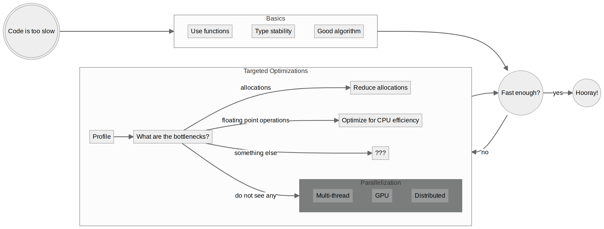
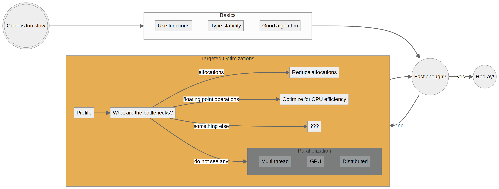

Julia at Full Tilt: Profiling and Optimizations
Paul Schrimpf
2024-04-30
Introduction
About Me
- UBC Economics, research in econometrics, industrial organization
- My Website
- my github
- Teach courses using Julia
Useful Resources
Optimizing Serial Code Rackauckas (2019)
Coding for performance (basis for this talk) Schrimpf (2019 (revised 2024))
Overview
Basics

Avoid Premature Optimization
- Complete, correct \(>>\) fast, incorrect, unfinished
- Clear, maintainable \(>\) fast, incomprensible (almost always)
- But some practices can both make code faster and clearer
Functions
- Julia functions are JIT compiled, global scripts are not
- Code needs to be in a function for full performance
- Organizing code into functions is also better for readability and maintenance
Type Stability
- To generate efficient code, the Julia compiler needs to know the types of all variables
- Given the types of the inputs of a function, the types of its intermediate variables and output should be deterministic
Type Stable: Example
Type Stable: Example
Stable: Float to Float
BenchmarkTools.Trial: 10000 samples with 3 evaluations. Range (min … max): 8.871 μs … 18.885 μs ┊ GC (min … max): 0.00% … 0.00% Time (median): 8.878 μs ┊ GC (median): 0.00% Time (mean ± σ): 9.033 μs ± 552.938 ns ┊ GC (mean ± σ): 0.00% ± 0.00% █▁ ▅▃ ▃ ▁ ██▆▅▅▅▄▄▅▃▄▃▁▁▅▄▃▁▁▃▃▁▁██▆▄▃▁▁▁▁▁▁▁▁██▅▁▁▁▁▁▁▁▃▃▃▆▇▆▅▅▃▄▃▅▄ █ 8.87 μs Histogram: log(frequency) by time 10.3 μs < Memory estimate: 16 bytes, allocs estimate: 1.
Stable: Int to Int
BenchmarkTools.Trial: 10000 samples with 10 evaluations. Range (min … max): 1.754 μs … 59.280 μs ┊ GC (min … max): 0.00% … 0.00% Time (median): 1.774 μs ┊ GC (median): 0.00% Time (mean ± σ): 1.801 μs ± 586.764 ns ┊ GC (mean ± σ): 0.00% ± 0.00% ▁▇█▅ ▂▄█████▅▃▂▂▂▂▂▂▂▂▁▂▁▂▁▁▁▂▂▂▃▃▃▃▂▂▂▂▂▂▂▂▂▂▂▂▂▂▂▂▂▂▂▁▂▂▁▂▂▁▂▂ ▃ 1.75 μs Histogram: frequency by time 2 μs < Memory estimate: 16 bytes, allocs estimate: 1.
Unstable: (Int & Float) to (Int | Float)
BenchmarkTools.Trial: 10000 samples with 1 evaluation. Range (min … max): 54.078 μs … 104.830 μs ┊ GC (min … max): 0.00% … 0.00% Time (median): 58.656 μs ┊ GC (median): 0.00% Time (mean ± σ): 58.734 μs ± 4.148 μs ┊ GC (mean ± σ): 0.00% ± 0.00% ▁▂ ▁██▂ ▂▃▆███▇▅▃▃▄████▆▄▃▃▃▂▂▂▂▃▂▂▂▂▂▂▂▂▁▂▁▂▂▂▂▂▂▂▂▂▂▂▂▂▂▂▂▂▂▂▂▂▂▂▂ ▃ 54.1 μs Histogram: frequency by time 76.4 μs < Memory estimate: 16 bytes, allocs estimate: 1.
- 6-32x slowdown!
Detecting Type Instability
MethodInstance for unstabletrick(::Vector{Int64}, ::Int64)
from unstabletrick(x, t) @ Main In[2]:2
Arguments
#self#::Core.Const(unstabletrick)
x::Vector{Int64}
t::Int64
Locals
#13::var"#13#14"{Int64}
Body::Int64
1 ─ %1 = Main.:(var"#13#14")::Core.Const(var"#13#14")
│ %2 = Core.typeof(t)::Core.Const(Int64)
│ %3 = Core.apply_type(%1, %2)::Core.Const(var"#13#14"{Int64})
│ (#13 = %new(%3, t))
│ %5 = #13::var"#13#14"{Int64}
│ %6 = Base.Generator(%5, x)::Base.Generator{Vector{Int64}, var"#13#14"{Int64}}
│ %7 = Main.sum(%6)::Int64
└── return %7
MethodInstance for unstabletrick(::Vector{Int64}, ::Float64)
from unstabletrick(x, t) @ Main In[2]:2
Arguments
#self#::Core.Const(unstabletrick)
x::Vector{Int64}
t::Float64
Locals
#13::var"#13#14"{Float64}
Body::Union{Float64, Int64}
1 ─ %1 = Main.:(var"#13#14")::Core.Const(var"#13#14")
│ %2 = Core.typeof(t)::Core.Const(Float64)
│ %3 = Core.apply_type(%1, %2)::Core.Const(var"#13#14"{Float64})
│ (#13 = %new(%3, t))
│ %5 = #13::var"#13#14"{Float64}
│ %6 = Base.Generator(%5, x)::Base.Generator{Vector{Int64}, var"#13#14"{Float64}}
│ %7 = Main.sum(%6)::Union{Float64, Int64}
└── return %7
Extended Example
Code for klm()
using ForwardDiff, LinearAlgebra, Distributions
function statparts(gi::Function)
function P(A) # projection matrix
A*pinv(A'*A)*A'
end
function(θ)
giθ = gi(θ)
p = length(θ)
(n, k) = size(giθ)
Ω = cov(giθ)
gn=mean(gi(θ), dims=1)'
Gi= ForwardDiff.jacobian(gi,θ)
Gi = reshape(Gi, n , k, p)
G = mean(Gi, dims=1)
Γ = zeros(eltype(Gi),p,k,k)
D = zeros(eltype(Gi),k, p)
for j in 1:p
for i in 1:n
Γ[j,:,:] += (Gi[i,:,j] .- G[1,:,j]) * giθ[i,:]'
end
Γ[j,:,:] ./= n
D[:,j] = G[1,:,j] - Γ[j,:,:]*inv(Ω)*gn
end
return(n,k,p,gn, Ω, D, P)
end
end
function klm(gi::Function)
SP = statparts(gi)
function(θ)
(n,k,p,gn, Ω, D, P) = SP(θ)
return n*(gn'*Ω^(-1/2)*P(Ω^(-1/2)*D)*Ω^(-1/2)*gn)[1]
end
end
import Random
function simulate_ivshare(n,β,γ,ρ)
z = randn(n, size(γ)[1])
endo = randn(n, length(β))
x = z*γ .+ endo
ξ = rand(Normal(0,sqrt((1.0-ρ^2))),n).+endo[:,1]*ρ
y = cdf.(Logistic(), x*β .+ ξ)
return((y=y,x=x,z=z))
end
n = 100
k = 2
iv = 3
β0 = ones(k)
π0 = vcat(5*I,ones(iv-k,k))
ρ = 0.5
Random.seed!(622)
(y,x,z) = simulate_ivshare(n,β0,π0,ρ)
function gi_ivshare(β,y,x,z)
ξ = quantile.(Logistic(),y) .- x*β
ξ.*z
end
gi = let y=y, x=x, z=z
β->gi_ivshare(β,y,x,z)
end#20 (generic function with 1 method)MethodInstance for (::var"#15#17"{var"#20#21"{Vector{Float64}, Matrix{Float64}, Matrix{Float64}}, var"#P#16"})(::Vector{Float64})
from (::var"#15#17")(θ) @ Main In[8]:6
Arguments
#self#::var"#15#17"{var"#20#21"{Vector{Float64}, Matrix{Float64}, Matrix{Float64}}, var"#P#16"}
θ::Vector{Float64}
Locals
@_3::Union{Nothing, Tuple{Int64, Int64}}
@_4::Int64
D::Union{Array{Float64, 3}, Matrix}
Γ::Union{Array{Float64, 4}, Array{_A, 3} where _A}
G::Any
Gi::Any
gn::Adjoint{Float64, Matrix{Float64}}
Ω::Matrix{Float64}
k::Int64
n::Int64
p::Int64
giθ::Matrix{Float64}
@_15::Union{Nothing, Tuple{Int64, Int64}}
j::Int64
i::Int64
Body::Tuple{Int64, Int64, Int64, Adjoint{Float64, Matrix{Float64}}, Matrix{Float64}, Union{Array{Float64, 3}, Matrix}, var"#P#16"}
1 ─ %1 = Core.getfield(#self#, :gi)::var"#20#21"{Vector{Float64}, Matrix{Float64}, Matrix{Float64}}
│ (giθ = (%1)(θ))
│ (p = Main.length(θ))
│ %4 = Main.size(giθ)::Tuple{Int64, Int64}
│ %5 = Base.indexed_iterate(%4, 1)::Core.PartialStruct(Tuple{Int64, Int64}, Any[Int64, Core.Const(2)])
│ (n = Core.getfield(%5, 1))
│ (@_4 = Core.getfield(%5, 2))
│ %8 = Base.indexed_iterate(%4, 2, @_4::Core.Const(2))::Core.PartialStruct(Tuple{Int64, Int64}, Any[Int64, Core.Const(3)])
│ (k = Core.getfield(%8, 1))
│ (Ω = Main.cov(giθ))
│ %11 = Core.getfield(#self#, :gi)::var"#20#21"{Vector{Float64}, Matrix{Float64}, Matrix{Float64}}
│ %12 = (%11)(θ)::Matrix{Float64}
│ %13 = (:dims,)::Core.Const((:dims,))
│ %14 = Core.apply_type(Core.NamedTuple, %13)::Core.Const(NamedTuple{(:dims,)})
│ %15 = Core.tuple(1)::Core.Const((1,))
│ %16 = (%14)(%15)::Core.Const((dims = 1,))
│ %17 = Core.kwcall(%16, Main.mean, %12)::Matrix{Float64}
│ (gn = Main.:var"'"(%17))
│ %19 = ForwardDiff.jacobian::Core.Const(ForwardDiff.jacobian)
│ %20 = Core.getfield(#self#, :gi)::var"#20#21"{Vector{Float64}, Matrix{Float64}, Matrix{Float64}}
│ (Gi = (%19)(%20, θ))
│ (Gi = Main.reshape(Gi, n, k, p))
│ %23 = (:dims,)::Core.Const((:dims,))
│ %24 = Core.apply_type(Core.NamedTuple, %23)::Core.Const(NamedTuple{(:dims,)})
│ %25 = Core.tuple(1)::Core.Const((1,))
│ %26 = (%24)(%25)::Core.Const((dims = 1,))
│ (G = Core.kwcall(%26, Main.mean, Gi))
│ %28 = Main.eltype(Gi)::Any
│ %29 = p::Int64
│ %30 = k::Int64
│ (Γ = Main.zeros(%28, %29, %30, k))
│ %32 = Main.eltype(Gi)::Any
│ %33 = k::Int64
│ (D = Main.zeros(%32, %33, p))
│ %35 = (1:p)::Core.PartialStruct(UnitRange{Int64}, Any[Core.Const(1), Int64])
│ (@_3 = Base.iterate(%35))
│ %37 = (@_3 === nothing)::Bool
│ %38 = Base.not_int(%37)::Bool
└── goto #7 if not %38
2 ┄ %40 = @_3::Tuple{Int64, Int64}
│ (j = Core.getfield(%40, 1))
│ %42 = Core.getfield(%40, 2)::Int64
│ %43 = (1:n)::Core.PartialStruct(UnitRange{Int64}, Any[Core.Const(1), Int64])
│ (@_15 = Base.iterate(%43))
│ %45 = (@_15 === nothing)::Bool
│ %46 = Base.not_int(%45)::Bool
└── goto #5 if not %46
3 ┄ %48 = @_15::Tuple{Int64, Int64}
│ (i = Core.getfield(%48, 1))
│ %50 = Core.getfield(%48, 2)::Int64
│ %51 = Base.getindex(Γ, j, Main.:(:), Main.:(:))::Matrix
│ %52 = Main.:-::Core.Const(-)
│ %53 = Base.getindex(Gi, i, Main.:(:), j)::Any
│ %54 = Base.getindex(G, 1, Main.:(:), j)::Any
│ %55 = Base.broadcasted(%52, %53, %54)::Any
│ %56 = Base.materialize(%55)::Any
│ %57 = Base.getindex(giθ, i, Main.:(:))::Vector{Float64}
│ %58 = Main.:var"'"(%57)::Adjoint{Float64, Vector{Float64}}
│ %59 = (%56 * %58)::Any
│ %60 = (%51 + %59)::Any
│ Base.setindex!(Γ, %60, j, Main.:(:), Main.:(:))
│ (@_15 = Base.iterate(%43, %50))
│ %63 = (@_15 === nothing)::Bool
│ %64 = Base.not_int(%63)::Bool
└── goto #5 if not %64
4 ─ goto #3
5 ┄ %67 = Base.dotview(Γ, j, Main.:(:), Main.:(:))::SubArray{_A, 2, P, Tuple{Int64, Base.Slice{Base.OneTo{Int64}}, Base.Slice{Base.OneTo{Int64}}}, true} where {_A, P<:(Array{_A, 3} where _A)}
│ %68 = Main.:/::Core.Const(/)
│ %69 = Base.getindex(Γ, j, Main.:(:), Main.:(:))::Matrix
│ %70 = Base.broadcasted(%68, %69, n)::Base.Broadcast.Broadcasted{Base.Broadcast.DefaultArrayStyle{2}, Nothing, typeof(/), <:Tuple{Matrix, Int64}}
│ Base.materialize!(%67, %70)
│ %72 = Base.getindex(G, 1, Main.:(:), j)::Any
│ %73 = Base.getindex(Γ, j, Main.:(:), Main.:(:))::Matrix
│ %74 = Main.inv(Ω)::Matrix{Float64}
│ %75 = (%73 * %74 * gn)::Any
│ %76 = (%72 - %75)::Any
│ Base.setindex!(D, %76, Main.:(:), j)
│ (@_3 = Base.iterate(%35, %42))
│ %79 = (@_3 === nothing)::Bool
│ %80 = Base.not_int(%79)::Bool
└── goto #7 if not %80
6 ─ goto #2
7 ┄ %83 = n::Int64
│ %84 = k::Int64
│ %85 = p::Int64
│ %86 = gn::Adjoint{Float64, Matrix{Float64}}
│ %87 = Ω::Matrix{Float64}
│ %88 = D::Union{Array{Float64, 3}, Matrix}
│ %89 = Core.getfield(#self#, :P)::Core.Const(var"#P#16"())
│ %90 = Core.tuple(%83, %84, %85, %86, %87, %88, %89)::Tuple{Int64, Int64, Int64, Adjoint{Float64, Matrix{Float64}}, Matrix{Float64}, Union{Array{Float64, 3}, Matrix}, var"#P#16"}
└── return %90
BenchmarkTools.Trial: 8836 samples with 1 evaluation. Range (min … max): 517.217 μs … 5.395 ms ┊ GC (min … max): 0.00% … 85.98% Time (median): 535.143 μs ┊ GC (median): 0.00% Time (mean ± σ): 559.969 μs ± 280.016 μs ┊ GC (mean ± σ): 3.40% ± 5.98% ▂▄▆▇███▇▇▆▆▅▅▄▄▃▃▂▂▁▂▁▁▁ ▃ ▄▆██████████████████████████▇████▇▇▇▆▇▇▇▇▇▇▆▇▆▆▆▅▆▆▆▅▄▅▇▆▅▄▅▄ █ 517 μs Histogram: log(frequency) by time 641 μs < Memory estimate: 221.16 KiB, allocs estimate: 3910.
klm_stable()
function statparts_stable(gi::F) where {F <: Function}
function P(A) # projection matrix
A*pinv(A'*A)*A'
end
function(θ)
giθ = gi(θ)
p = length(θ)
(n, k) = size(giθ)
Ω = cov(giθ)
gn=mean(gi(θ), dims=1)'
Gi = similar(gn,n,k,p)
Gi= ForwardDiff.jacobian!(Gi,gi,θ)
G = mean(Gi, dims=1)
Γ = zeros(eltype(Gi),p,k,k)
D = zeros(eltype(Gi),k, p)
for j in 1:p
for i in 1:n
Γ[j,:,:] += (Gi[i,:,j] .- G[1,:,j]) * giθ[i,:]'
end
Γ[j,:,:] ./= n
D[:,j] = G[1,:,j] - Γ[j,:,:]*inv(Ω)*gn
end
return(n,k,p,gn, Ω, D, P)
end
end
function klm_stable(gi::F) where {F <: Function}
SP = statparts_stable(gi)
function(θ)
(n,k,p,gn, Ω, D, P) = SP(θ)
λ, v = eigen(Ω)
irΩ = v*diagm(λ.^(-1/2))*v'
return n*(gn'*irΩ*P(irΩ*D)*irΩ*gn)[1]
end
endklm_stable (generic function with 1 method)MethodInstance for (::var"#22#24"{var"#20#21"{Vector{Float64}, Matrix{Float64}, Matrix{Float64}}, var"#P#23"})(::Vector{Float64})
from (::var"#22#24")(θ) @ Main In[11]:5
Arguments
#self#::var"#22#24"{var"#20#21"{Vector{Float64}, Matrix{Float64}, Matrix{Float64}}, var"#P#23"}
θ::Vector{Float64}
Locals
@_3::Union{Nothing, Tuple{Int64, Int64}}
@_4::Int64
D::Matrix{Float64}
Γ::Array{Float64, 3}
G::Array{Float64, 3}
Gi::Array{Float64, 3}
gn::Adjoint{Float64, Matrix{Float64}}
Ω::Matrix{Float64}
k::Int64
n::Int64
p::Int64
giθ::Matrix{Float64}
@_15::Union{Nothing, Tuple{Int64, Int64}}
j::Int64
i::Int64
Body::Tuple{Int64, Int64, Int64, Adjoint{Float64, Matrix{Float64}}, Matrix{Float64}, Matrix{Float64}, var"#P#23"}
1 ─ %1 = Core.getfield(#self#, :gi)::var"#20#21"{Vector{Float64}, Matrix{Float64}, Matrix{Float64}}
│ (giθ = (%1)(θ))
│ (p = Main.length(θ))
│ %4 = Main.size(giθ)::Tuple{Int64, Int64}
│ %5 = Base.indexed_iterate(%4, 1)::Core.PartialStruct(Tuple{Int64, Int64}, Any[Int64, Core.Const(2)])
│ (n = Core.getfield(%5, 1))
│ (@_4 = Core.getfield(%5, 2))
│ %8 = Base.indexed_iterate(%4, 2, @_4::Core.Const(2))::Core.PartialStruct(Tuple{Int64, Int64}, Any[Int64, Core.Const(3)])
│ (k = Core.getfield(%8, 1))
│ (Ω = Main.cov(giθ))
│ %11 = Core.getfield(#self#, :gi)::var"#20#21"{Vector{Float64}, Matrix{Float64}, Matrix{Float64}}
│ %12 = (%11)(θ)::Matrix{Float64}
│ %13 = (:dims,)::Core.Const((:dims,))
│ %14 = Core.apply_type(Core.NamedTuple, %13)::Core.Const(NamedTuple{(:dims,)})
│ %15 = Core.tuple(1)::Core.Const((1,))
│ %16 = (%14)(%15)::Core.Const((dims = 1,))
│ %17 = Core.kwcall(%16, Main.mean, %12)::Matrix{Float64}
│ (gn = Main.:var"'"(%17))
│ (Gi = Main.similar(gn, n, k, p))
│ %20 = ForwardDiff.jacobian!::Core.Const(ForwardDiff.jacobian!)
│ %21 = Gi::Array{Float64, 3}
│ %22 = Core.getfield(#self#, :gi)::var"#20#21"{Vector{Float64}, Matrix{Float64}, Matrix{Float64}}
│ (Gi = (%20)(%21, %22, θ))
│ %24 = (:dims,)::Core.Const((:dims,))
│ %25 = Core.apply_type(Core.NamedTuple, %24)::Core.Const(NamedTuple{(:dims,)})
│ %26 = Core.tuple(1)::Core.Const((1,))
│ %27 = (%25)(%26)::Core.Const((dims = 1,))
│ (G = Core.kwcall(%27, Main.mean, Gi))
│ %29 = Main.eltype(Gi)::Core.Const(Float64)
│ %30 = p::Int64
│ %31 = k::Int64
│ (Γ = Main.zeros(%29, %30, %31, k))
│ %33 = Main.eltype(Gi)::Core.Const(Float64)
│ %34 = k::Int64
│ (D = Main.zeros(%33, %34, p))
│ %36 = (1:p)::Core.PartialStruct(UnitRange{Int64}, Any[Core.Const(1), Int64])
│ (@_3 = Base.iterate(%36))
│ %38 = (@_3 === nothing)::Bool
│ %39 = Base.not_int(%38)::Bool
└── goto #7 if not %39
2 ┄ %41 = @_3::Tuple{Int64, Int64}
│ (j = Core.getfield(%41, 1))
│ %43 = Core.getfield(%41, 2)::Int64
│ %44 = (1:n)::Core.PartialStruct(UnitRange{Int64}, Any[Core.Const(1), Int64])
│ (@_15 = Base.iterate(%44))
│ %46 = (@_15 === nothing)::Bool
│ %47 = Base.not_int(%46)::Bool
└── goto #5 if not %47
3 ┄ %49 = @_15::Tuple{Int64, Int64}
│ (i = Core.getfield(%49, 1))
│ %51 = Core.getfield(%49, 2)::Int64
│ %52 = Base.getindex(Γ, j, Main.:(:), Main.:(:))::Matrix{Float64}
│ %53 = Main.:-::Core.Const(-)
│ %54 = Base.getindex(Gi, i, Main.:(:), j)::Vector{Float64}
│ %55 = Base.getindex(G, 1, Main.:(:), j)::Vector{Float64}
│ %56 = Base.broadcasted(%53, %54, %55)::Base.Broadcast.Broadcasted{Base.Broadcast.DefaultArrayStyle{1}, Nothing, typeof(-), Tuple{Vector{Float64}, Vector{Float64}}}
│ %57 = Base.materialize(%56)::Vector{Float64}
│ %58 = Base.getindex(giθ, i, Main.:(:))::Vector{Float64}
│ %59 = Main.:var"'"(%58)::Adjoint{Float64, Vector{Float64}}
│ %60 = (%57 * %59)::Matrix{Float64}
│ %61 = (%52 + %60)::Matrix{Float64}
│ Base.setindex!(Γ, %61, j, Main.:(:), Main.:(:))
│ (@_15 = Base.iterate(%44, %51))
│ %64 = (@_15 === nothing)::Bool
│ %65 = Base.not_int(%64)::Bool
└── goto #5 if not %65
4 ─ goto #3
5 ┄ %68 = Base.dotview(Γ, j, Main.:(:), Main.:(:))::SubArray{Float64, 2, Array{Float64, 3}, Tuple{Int64, Base.Slice{Base.OneTo{Int64}}, Base.Slice{Base.OneTo{Int64}}}, true}
│ %69 = Main.:/::Core.Const(/)
│ %70 = Base.getindex(Γ, j, Main.:(:), Main.:(:))::Matrix{Float64}
│ %71 = Base.broadcasted(%69, %70, n)::Base.Broadcast.Broadcasted{Base.Broadcast.DefaultArrayStyle{2}, Nothing, typeof(/), Tuple{Matrix{Float64}, Int64}}
│ Base.materialize!(%68, %71)
│ %73 = Base.getindex(G, 1, Main.:(:), j)::Vector{Float64}
│ %74 = Base.getindex(Γ, j, Main.:(:), Main.:(:))::Matrix{Float64}
│ %75 = Main.inv(Ω)::Matrix{Float64}
│ %76 = (%74 * %75 * gn)::Matrix{Float64}
│ %77 = (%73 - %76)::Matrix{Float64}
│ Base.setindex!(D, %77, Main.:(:), j)
│ (@_3 = Base.iterate(%36, %43))
│ %80 = (@_3 === nothing)::Bool
│ %81 = Base.not_int(%80)::Bool
└── goto #7 if not %81
6 ─ goto #2
7 ┄ %84 = n::Int64
│ %85 = k::Int64
│ %86 = p::Int64
│ %87 = gn::Adjoint{Float64, Matrix{Float64}}
│ %88 = Ω::Matrix{Float64}
│ %89 = D::Matrix{Float64}
│ %90 = Core.getfield(#self#, :P)::Core.Const(var"#P#23"())
│ %91 = Core.tuple(%84, %85, %86, %87, %88, %89, %90)::Tuple{Int64, Int64, Int64, Adjoint{Float64, Matrix{Float64}}, Matrix{Float64}, Matrix{Float64}, var"#P#23"}
└── return %91
BenchmarkTools.Trial: 10000 samples with 1 evaluation. Range (min … max): 98.690 μs … 3.815 ms ┊ GC (min … max): 0.00% … 95.52% Time (median): 114.054 μs ┊ GC (median): 0.00% Time (mean ± σ): 128.470 μs ± 207.603 μs ┊ GC (mean ± σ): 9.79% ± 5.84% ▁▃▃▄▄▇███▇▇▆▅▄▃▂▁ ▂▂▃▄▅▇██████████████████▇▇▆▅▅▅▄▃▃▃▃▃▃▃▃▃▃▃▃▂▃▃▂▂▂▂▂▂▂▂▂▂▂▁▂▂▂ ▄ 98.7 μs Histogram: frequency by time 158 μs < Memory estimate: 173.17 KiB, allocs estimate: 1466.
- See https://schrimpf.github.io/ARGridBootstrap.jl/assignment.html#statparts for more information
Targeted Optimizations

Profiling
profileiframe
using Profile, ProfileCanvas
function profilehtmlstring()
buf = IOBuffer()
show(buf, MIME("text/html"), ProfileCanvas.view(Profile.fetch()))
s=String(take!(buf))
println("\n<br><br>\n"*s*"\n<br>\n")
end
function profileiframe(filename="proftmp.html")
#buf = IOBuffer()
#show(buf, MIME("text/html"), ProfileCanvas.view(Profile.fetch()))
#s=String(take!(buf))
#s=replace(s, "\"" => """ )
# HTML("<iframe srcdata=\""*s*"\" width=\"1200\" height=\"650\"></iframe>\n")
ProfileCanvas.html_file(filename)
HTML("<iframe src=\""*filename*"\" width=\"1200\" height=\"650\"></iframe>\n")
endReducing Allocations
- Allocating memory is slow
- Reduce allocations by:
- Using
@viewsinstead of slices - Pre-allocating and reusing arrays
- Eliminate dynamic allocations with
StaticArraysor similar compile time known size types
- Using
Reduced Allocations
klm_fast()
function statparts_fast(gi::F) where {F <: Function}
function P(A::AbstractMatrix) # projection matrix
A*pinv(A'*A)*A'
end
let gi=gi
function(θ)
giθ = gi(θ)
p = length(θ)
(n, k) = size(giθ)
Ω = Hermitian(cov(giθ))
gn=mean(gi(θ), dims=1)'
iΩgn = Ω \ gn
Gi = similar(gn,n,k,p)
ForwardDiff.jacobian!(Gi,gi,θ)
G = mean(Gi, dims=1)
Γ = zeros(eltype(Gi),p,k,k)
D = zeros(eltype(Gi),k, p)
@inbounds for j in 1:p
@inbounds for i in 1:n
@views Γ[j,:,:] .+= (Gi[i,:,j] .- G[1,:,j]) * giθ[i,:]'
end
Γ[j,:,:] ./= n
@views D[:,j] .= G[1,:,j] .- Γ[j,:,:]*iΩgn
end
return(n,k,p,gn, Ω, D, P)
end
end
end
function klm_fast(gi::F) where {F <: Function}
SP = statparts_fast(gi)
function(θ)
(n,k,p,gn, Ω, D, P) = SP(θ)
λ, v = eigen(Ω)
irΩ = v*diagm(λ.^(-1/2))*v'
return n*(gn'*irΩ*P(irΩ*D)*irΩ*gn)[1]
end
endklm_fast (generic function with 1 method)BenchmarkTools.Trial: 10000 samples with 1 evaluation. Range (min … max): 75.089 μs … 18.946 ms ┊ GC (min … max): 0.00% … 97.41% Time (median): 82.954 μs ┊ GC (median): 0.00% Time (mean ± σ): 99.055 μs ± 293.161 μs ┊ GC (mean ± σ): 12.44% ± 4.68% ▄▇█▄▁ ▂▃▄██████▇▆▅▄▄▄▃▃▃▃▃▃▂▃▂▂▂▂▂▂▂▂▂▂▂▂▂▂▂▂▂▂▂▂▂▂▁▂▂▂▂▂▂▂▂▂▂▂▂▂▂ ▃ 75.1 μs Histogram: frequency by time 142 μs < Memory estimate: 118.53 KiB, allocs estimate: 501.
StaticArrays
Code
function share(δ, Σ, x, ∫)
J,K = size(x)
(length(δ) == J) || error("length(δ)=$(length(δ)) != size(x,1)=$J")
(K,K) == size(Σ) || error("size(x,2)=$K != size(Σ)=$(size(Σ))")
xΣ = x*Σ
function shareν(ν)
s = δ + xΣ*ν
smax=max(0,maximum(s))
s = s .- smax
s = exp.(s)
s *= 1/(sum(s) + exp(0-smax))
return(s)
end
return(∫(shareν))
endshare (generic function with 1 method)Heap allocated arrays
J = 10
K = 5
δ = rand(J)
X = randn(J,K)
Σ = I + zeros(K,K)
∫ = Integrator(MvNormal(zeros(K),I))
@benchmark share(δ,Σ,X,∫)BenchmarkTools.Trial: 10000 samples with 1 evaluation. Range (min … max): 52.217 μs … 5.878 ms ┊ GC (min … max): 0.00% … 97.54% Time (median): 72.432 μs ┊ GC (median): 0.00% Time (mean ± σ): 93.227 μs ± 242.590 μs ┊ GC (mean ± σ): 11.79% ± 4.47% ▁▅██▄▄ ▁▂▂▃▃▃▃▅███████▆▅▅▄▃▃▃▂▂▂▂▂▂▂▂▂▃▄▅▄▆▅▅▅▄▄▃▄▃▃▃▂▂▂▂▂▂▁▁▁▁▁▁▁▁ ▃ 52.2 μs Histogram: frequency by time 137 μs < Memory estimate: 98.78 KiB, allocs estimate: 700.
Stack allocated arrays
using StaticArrays
sδ = SVector{J}(δ)
sΣ = SMatrix{K,K}(Σ)
sX = SMatrix{J,K}(X)
nd = length(∫.x)
iw = SVector{nd}(fill(1/nd,nd))
ix = [SVector{K}(x) for x ∈ ∫.x]
s∫ = Integrator(ix,iw)
@benchmark share(sδ,sΣ,sX,s∫)BenchmarkTools.Trial: 10000 samples with 1 evaluation. Range (min … max): 9.626 μs … 39.948 μs ┊ GC (min … max): 0.00% … 0.00% Time (median): 9.782 μs ┊ GC (median): 0.00% Time (mean ± σ): 10.163 μs ± 1.396 μs ┊ GC (mean ± σ): 0.00% ± 0.00% ▆█▇▂▁ ▅▆▃ ▂▄▂ ▃▂ ▂▁ ▂▂ ▂ ██████▇▄███▇███▆▅██▇▅███▅▁▆██▇▅▃▃▁▁▁▁▁▄▇▅▄▁▃▃▃▁▁▁▁▃▁▁▃▅▃▁▁▃ █ 9.63 μs Histogram: log(frequency) by time 14.2 μs < Memory estimate: 96 bytes, allocs estimate: 1.
Memory Considerations
- Computations are faster when operating accessing contiguous chunks of memory
- Access arrays by columns
- Data moves
RAM ⇒ Cache ⇒ CPU RegistersRAM ⇒ Cachemuch slower thanCache ⇒ CPU Registers- Can see big benefits from small code that fits on cache
- CPU prefetches data from
RAM ⇒ Cache, by predicting what will be needed - Needed data not on
Cachewhen needed is a “cache miss”, these are costly - Predictable code without branches and accessing contiguous memory helps avoid caches misses
Single Instruction, Multiple Data
- CPUs can perform the same operation on multiple numbers at the same time
- “Vectorized instructions”
- Current generation x86 CPUs have 512 bit registers, can operate on 8
Float64values at once
- Compiler tries to use vectorized instructions when possible
- Loop of fixed length (no
breakorcontinue) - No branching
- Re-ordering allowed (indicate with
@simd)
- Loop of fixed length (no
SISD
function slowdot(a,b)
out = one(promote_type(eltype(a),eltype(b)))
for i in eachindex(a)
out += a[i]*b[i]
end
out
end
n = 1_000
a = rand(n)
b = rand(n)
@code_llvm slowdot(a,b); @ In[24]:1 within `slowdot`
define double @julia_slowdot_4839({}* noundef nonnull align 16 dereferenceable(40) %0, {}* noundef nonnull align 16 dereferenceable(40) %1) #0 {
top:
; @ In[24]:3 within `slowdot`
; ┌ @ abstractarray.jl:321 within `eachindex`
; │┌ @ abstractarray.jl:137 within `axes1`
; ││┌ @ abstractarray.jl:98 within `axes`
; │││┌ @ array.jl:191 within `size`
%2 = bitcast {}* %0 to { i8*, i64, i16, i16, i32 }*
%arraylen_ptr = getelementptr inbounds { i8*, i64, i16, i16, i32 }, { i8*, i64, i16, i16, i32 }* %2, i64 0, i32 1
%arraylen = load i64, i64* %arraylen_ptr, align 8
; └└└└
; ┌ @ range.jl:897 within `iterate`
; │┌ @ range.jl:672 within `isempty`
; ││┌ @ operators.jl:378 within `>`
; │││┌ @ int.jl:83 within `<`
%.not.not = icmp eq i64 %arraylen, 0
; └└└└
br i1 %.not.not, label %L31, label %L13.preheader
L13.preheader: ; preds = %top
%3 = bitcast {}* %1 to { i8*, i64, i16, i16, i32 }*
%arraylen_ptr8 = getelementptr inbounds { i8*, i64, i16, i16, i32 }, { i8*, i64, i16, i16, i32 }* %3, i64 0, i32 1
%arraylen9 = load i64, i64* %arraylen_ptr8, align 8
%4 = bitcast {}* %0 to double**
%arrayptr23 = load double*, double** %4, align 8
%5 = bitcast {}* %1 to double**
%arrayptr1524 = load double*, double** %5, align 8
; @ In[24]:4 within `slowdot`
; ┌ @ essentials.jl:13 within `getindex`
%smin = call i64 @llvm.smin.i64(i64 %arraylen9, i64 0)
%6 = sub i64 %arraylen9, %smin
%smax = call i64 @llvm.smax.i64(i64 %smin, i64 -1)
%7 = add nsw i64 %smax, 1
%8 = mul nuw nsw i64 %6, %7
%exit.mainloop.at = call i64 @llvm.umin.i64(i64 %arraylen, i64 %8)
%.not = icmp eq i64 %exit.mainloop.at, 0
br i1 %.not, label %main.pseudo.exit, label %idxend13.preheader
idxend13.preheader: ; preds = %L13.preheader
; └
; @ In[24]:5 within `slowdot`
%9 = add nsw i64 %exit.mainloop.at, -1
%xtraiter = and i64 %exit.mainloop.at, 7
%10 = icmp ult i64 %9, 7
br i1 %10, label %main.exit.selector.unr-lcssa, label %idxend13.preheader.new
idxend13.preheader.new: ; preds = %idxend13.preheader
%unroll_iter = and i64 %exit.mainloop.at, 9223372036854775800
br label %idxend13
L31: ; preds = %idxend13.postloop, %main.exit.selector, %top
%value_phi20 = phi double [ 1.000000e+00, %top ], [ %.lcssa50, %main.exit.selector ], [ %63, %idxend13.postloop ]
ret double %value_phi20
oob: ; preds = %L13.postloop
; @ In[24]:4 within `slowdot`
; ┌ @ essentials.jl:13 within `getindex`
%errorbox = alloca i64, align 8
store i64 %value_phi3.postloop, i64* %errorbox, align 8
call void @ijl_bounds_error_ints({}* %0, i64* nonnull %errorbox, i64 1)
unreachable
oob11: ; preds = %idxend.postloop
%errorbox12 = alloca i64, align 8
store i64 %value_phi3.postloop, i64* %errorbox12, align 8
call void @ijl_bounds_error_ints({}* %1, i64* nonnull %errorbox12, i64 1)
unreachable
idxend13: ; preds = %idxend13, %idxend13.preheader.new
%value_phi3 = phi i64 [ 1, %idxend13.preheader.new ], [ %50, %idxend13 ]
%value_phi5 = phi double [ 1.000000e+00, %idxend13.preheader.new ], [ %49, %idxend13 ]
%niter = phi i64 [ 0, %idxend13.preheader.new ], [ %niter.next.7, %idxend13 ]
%11 = add nsw i64 %value_phi3, -1
%12 = getelementptr inbounds double, double* %arrayptr23, i64 %11
%arrayref = load double, double* %12, align 8
%13 = getelementptr inbounds double, double* %arrayptr1524, i64 %11
%arrayref16 = load double, double* %13, align 8
; └
; ┌ @ float.jl:411 within `*`
%14 = fmul double %arrayref, %arrayref16
; └
; ┌ @ float.jl:409 within `+`
%15 = fadd double %value_phi5, %14
; └
; @ In[24]:5 within `slowdot`
; ┌ @ range.jl:901 within `iterate`
%16 = add nuw nsw i64 %value_phi3, 1
; └
; @ In[24]:4 within `slowdot`
; ┌ @ essentials.jl:13 within `getindex`
%17 = getelementptr inbounds double, double* %arrayptr23, i64 %value_phi3
%arrayref.1 = load double, double* %17, align 8
%18 = getelementptr inbounds double, double* %arrayptr1524, i64 %value_phi3
%arrayref16.1 = load double, double* %18, align 8
; └
; ┌ @ float.jl:411 within `*`
%19 = fmul double %arrayref.1, %arrayref16.1
; └
; ┌ @ float.jl:409 within `+`
%20 = fadd double %15, %19
; └
; @ In[24]:5 within `slowdot`
; ┌ @ range.jl:901 within `iterate`
%21 = add nuw nsw i64 %value_phi3, 2
; └
; @ In[24]:4 within `slowdot`
; ┌ @ essentials.jl:13 within `getindex`
%22 = getelementptr inbounds double, double* %arrayptr23, i64 %16
%arrayref.2 = load double, double* %22, align 8
%23 = getelementptr inbounds double, double* %arrayptr1524, i64 %16
%arrayref16.2 = load double, double* %23, align 8
; └
; ┌ @ float.jl:411 within `*`
%24 = fmul double %arrayref.2, %arrayref16.2
; └
; ┌ @ float.jl:409 within `+`
%25 = fadd double %20, %24
; └
; @ In[24]:5 within `slowdot`
; ┌ @ range.jl:901 within `iterate`
%26 = add nuw nsw i64 %value_phi3, 3
; └
; @ In[24]:4 within `slowdot`
; ┌ @ essentials.jl:13 within `getindex`
%27 = getelementptr inbounds double, double* %arrayptr23, i64 %21
%arrayref.3 = load double, double* %27, align 8
%28 = getelementptr inbounds double, double* %arrayptr1524, i64 %21
%arrayref16.3 = load double, double* %28, align 8
; └
; ┌ @ float.jl:411 within `*`
%29 = fmul double %arrayref.3, %arrayref16.3
; └
; ┌ @ float.jl:409 within `+`
%30 = fadd double %25, %29
; └
; @ In[24]:5 within `slowdot`
; ┌ @ range.jl:901 within `iterate`
%31 = add nuw nsw i64 %value_phi3, 4
; └
; @ In[24]:4 within `slowdot`
; ┌ @ essentials.jl:13 within `getindex`
%32 = getelementptr inbounds double, double* %arrayptr23, i64 %26
%arrayref.4 = load double, double* %32, align 8
%33 = getelementptr inbounds double, double* %arrayptr1524, i64 %26
%arrayref16.4 = load double, double* %33, align 8
; └
; ┌ @ float.jl:411 within `*`
%34 = fmul double %arrayref.4, %arrayref16.4
; └
; ┌ @ float.jl:409 within `+`
%35 = fadd double %30, %34
; └
; @ In[24]:5 within `slowdot`
; ┌ @ range.jl:901 within `iterate`
%36 = add nuw nsw i64 %value_phi3, 5
; └
; @ In[24]:4 within `slowdot`
; ┌ @ essentials.jl:13 within `getindex`
%37 = getelementptr inbounds double, double* %arrayptr23, i64 %31
%arrayref.5 = load double, double* %37, align 8
%38 = getelementptr inbounds double, double* %arrayptr1524, i64 %31
%arrayref16.5 = load double, double* %38, align 8
; └
; ┌ @ float.jl:411 within `*`
%39 = fmul double %arrayref.5, %arrayref16.5
; └
; ┌ @ float.jl:409 within `+`
%40 = fadd double %35, %39
; └
; @ In[24]:5 within `slowdot`
; ┌ @ range.jl:901 within `iterate`
%41 = add nuw nsw i64 %value_phi3, 6
; └
; @ In[24]:4 within `slowdot`
; ┌ @ essentials.jl:13 within `getindex`
%42 = getelementptr inbounds double, double* %arrayptr23, i64 %36
%arrayref.6 = load double, double* %42, align 8
%43 = getelementptr inbounds double, double* %arrayptr1524, i64 %36
%arrayref16.6 = load double, double* %43, align 8
; └
; ┌ @ float.jl:411 within `*`
%44 = fmul double %arrayref.6, %arrayref16.6
; └
; ┌ @ float.jl:409 within `+`
%45 = fadd double %40, %44
; └
; ┌ @ essentials.jl:13 within `getindex`
%46 = getelementptr inbounds double, double* %arrayptr23, i64 %41
%arrayref.7 = load double, double* %46, align 8
%47 = getelementptr inbounds double, double* %arrayptr1524, i64 %41
%arrayref16.7 = load double, double* %47, align 8
; └
; ┌ @ float.jl:411 within `*`
%48 = fmul double %arrayref.7, %arrayref16.7
; └
; ┌ @ float.jl:409 within `+`
%49 = fadd double %45, %48
; └
; @ In[24]:5 within `slowdot`
; ┌ @ range.jl:901 within `iterate`
%50 = add nuw nsw i64 %value_phi3, 8
; └
%niter.next.7 = add nuw i64 %niter, 8
%niter.ncmp.7.not = icmp eq i64 %niter.next.7, %unroll_iter
br i1 %niter.ncmp.7.not, label %main.exit.selector.unr-lcssa.loopexit, label %idxend13
main.exit.selector.unr-lcssa.loopexit: ; preds = %idxend13
; ┌ @ range.jl:901 within `iterate`
%51 = add nuw nsw i64 %value_phi3, 7
; └
br label %main.exit.selector.unr-lcssa
main.exit.selector.unr-lcssa: ; preds = %main.exit.selector.unr-lcssa.loopexit, %idxend13.preheader
%value_phi3.lcssa.ph = phi i64 [ undef, %idxend13.preheader ], [ %51, %main.exit.selector.unr-lcssa.loopexit ]
%.lcssa50.ph = phi double [ undef, %idxend13.preheader ], [ %49, %main.exit.selector.unr-lcssa.loopexit ]
%.lcssa49.ph = phi i64 [ undef, %idxend13.preheader ], [ %50, %main.exit.selector.unr-lcssa.loopexit ]
%value_phi3.unr = phi i64 [ 1, %idxend13.preheader ], [ %50, %main.exit.selector.unr-lcssa.loopexit ]
%value_phi5.unr = phi double [ 1.000000e+00, %idxend13.preheader ], [ %49, %main.exit.selector.unr-lcssa.loopexit ]
%lcmp.mod.not = icmp eq i64 %xtraiter, 0
br i1 %lcmp.mod.not, label %main.exit.selector, label %idxend13.epil
idxend13.epil: ; preds = %idxend13.epil, %main.exit.selector.unr-lcssa
%value_phi3.epil = phi i64 [ %57, %idxend13.epil ], [ %value_phi3.unr, %main.exit.selector.unr-lcssa ]
%value_phi5.epil = phi double [ %56, %idxend13.epil ], [ %value_phi5.unr, %main.exit.selector.unr-lcssa ]
%epil.iter = phi i64 [ %epil.iter.next, %idxend13.epil ], [ 0, %main.exit.selector.unr-lcssa ]
; @ In[24]:4 within `slowdot`
; ┌ @ essentials.jl:13 within `getindex`
%52 = add nsw i64 %value_phi3.epil, -1
%53 = getelementptr inbounds double, double* %arrayptr23, i64 %52
%arrayref.epil = load double, double* %53, align 8
%54 = getelementptr inbounds double, double* %arrayptr1524, i64 %52
%arrayref16.epil = load double, double* %54, align 8
; └
; ┌ @ float.jl:411 within `*`
%55 = fmul double %arrayref.epil, %arrayref16.epil
; └
; ┌ @ float.jl:409 within `+`
%56 = fadd double %value_phi5.epil, %55
; └
; @ In[24]:5 within `slowdot`
; ┌ @ range.jl:901 within `iterate`
%57 = add nuw nsw i64 %value_phi3.epil, 1
; └
%epil.iter.next = add i64 %epil.iter, 1
%epil.iter.cmp.not = icmp eq i64 %epil.iter.next, %xtraiter
br i1 %epil.iter.cmp.not, label %main.exit.selector, label %idxend13.epil
main.exit.selector: ; preds = %idxend13.epil, %main.exit.selector.unr-lcssa
%value_phi3.lcssa = phi i64 [ %value_phi3.lcssa.ph, %main.exit.selector.unr-lcssa ], [ %value_phi3.epil, %idxend13.epil ]
; @ In[24]:4 within `slowdot`
; ┌ @ float.jl:409 within `+`
%.lcssa50 = phi double [ %.lcssa50.ph, %main.exit.selector.unr-lcssa ], [ %56, %idxend13.epil ]
; └
; @ In[24]:5 within `slowdot`
; ┌ @ range.jl:901 within `iterate`
%.lcssa49 = phi i64 [ %.lcssa49.ph, %main.exit.selector.unr-lcssa ], [ %57, %idxend13.epil ]
; └
%58 = icmp ult i64 %value_phi3.lcssa, %arraylen
br i1 %58, label %main.pseudo.exit, label %L31
main.pseudo.exit: ; preds = %main.exit.selector, %L13.preheader
%value_phi3.copy = phi i64 [ 1, %L13.preheader ], [ %.lcssa49, %main.exit.selector ]
%value_phi5.copy = phi double [ 1.000000e+00, %L13.preheader ], [ %.lcssa50, %main.exit.selector ]
br label %L13.postloop
L13.postloop: ; preds = %idxend13.postloop, %main.pseudo.exit
%value_phi3.postloop = phi i64 [ %64, %idxend13.postloop ], [ %value_phi3.copy, %main.pseudo.exit ]
%value_phi5.postloop = phi double [ %63, %idxend13.postloop ], [ %value_phi5.copy, %main.pseudo.exit ]
; @ In[24]:4 within `slowdot`
; ┌ @ essentials.jl:13 within `getindex`
%59 = add i64 %value_phi3.postloop, -1
%inbounds.postloop = icmp ult i64 %59, %arraylen
br i1 %inbounds.postloop, label %idxend.postloop, label %oob
idxend.postloop: ; preds = %L13.postloop
%inbounds10.postloop = icmp ult i64 %59, %arraylen9
br i1 %inbounds10.postloop, label %idxend13.postloop, label %oob11
idxend13.postloop: ; preds = %idxend.postloop
%60 = getelementptr inbounds double, double* %arrayptr23, i64 %59
%arrayref.postloop = load double, double* %60, align 8
%61 = getelementptr inbounds double, double* %arrayptr1524, i64 %59
%arrayref16.postloop = load double, double* %61, align 8
; └
; ┌ @ float.jl:411 within `*`
%62 = fmul double %arrayref.postloop, %arrayref16.postloop
; └
; ┌ @ float.jl:409 within `+`
%63 = fadd double %value_phi5.postloop, %62
; └
; @ In[24]:5 within `slowdot`
; ┌ @ range.jl:901 within `iterate`
; │┌ @ promotion.jl:521 within `==`
%.not.not25.postloop = icmp eq i64 %value_phi3.postloop, %arraylen
; │└
%64 = add nuw nsw i64 %value_phi3.postloop, 1
; └
br i1 %.not.not25.postloop, label %L31, label %L13.postloop
}SIMD
function fastdot(a,b)
out = one(promote_type(eltype(a),eltype(b)))
@simd for i in eachindex(a)
out += a[i]*b[i]
end
out
end
@code_llvm fastdot(a,b); @ In[25]:1 within `fastdot`
define double @julia_fastdot_4863({}* noundef nonnull align 16 dereferenceable(40) %0, {}* noundef nonnull align 16 dereferenceable(40) %1) #0 {
top:
; @ In[25]:3 within `fastdot`
; ┌ @ simdloop.jl:69 within `macro expansion`
; │┌ @ abstractarray.jl:321 within `eachindex`
; ││┌ @ abstractarray.jl:137 within `axes1`
; │││┌ @ abstractarray.jl:98 within `axes`
; ││││┌ @ array.jl:191 within `size`
%2 = bitcast {}* %0 to { i8*, i64, i16, i16, i32 }*
%arraylen_ptr = getelementptr inbounds { i8*, i64, i16, i16, i32 }, { i8*, i64, i16, i16, i32 }* %2, i64 0, i32 1
%arraylen = load i64, i64* %arraylen_ptr, align 8
; │└└└└
; │ @ simdloop.jl:72 within `macro expansion`
; │┌ @ int.jl:83 within `<`
%.not = icmp eq i64 %arraylen, 0
; │└
br i1 %.not, label %L32, label %L13.lr.ph
L13.lr.ph: ; preds = %top
%3 = bitcast {}* %1 to { i8*, i64, i16, i16, i32 }*
%arraylen_ptr4 = getelementptr inbounds { i8*, i64, i16, i16, i32 }, { i8*, i64, i16, i16, i32 }* %3, i64 0, i32 1
%arraylen5 = load i64, i64* %arraylen_ptr4, align 8
%4 = bitcast {}* %0 to double**
%arrayptr17 = load double*, double** %4, align 8
%5 = bitcast {}* %1 to double**
%arrayptr1118 = load double*, double** %5, align 8
; │ @ simdloop.jl:75 within `macro expansion`
%6 = add i64 %arraylen5, -9223372036854775807
%smax = call i64 @llvm.smax.i64(i64 %6, i64 0)
%7 = sub i64 %arraylen5, %smax
%arraylen5.lobit = ashr i64 %arraylen5, 63
%8 = add nsw i64 %arraylen5.lobit, 1
%9 = mul nuw nsw i64 %7, %8
%smin27 = call i64 @llvm.smin.i64(i64 %arraylen, i64 %9)
%exit.mainloop.at = call i64 @llvm.smax.i64(i64 %smin27, i64 0)
%.not39 = icmp slt i64 %smin27, 1
br i1 %.not39, label %main.pseudo.exit, label %idxend9.preheader
idxend9.preheader: ; preds = %L13.lr.ph
%min.iters.check = icmp ult i64 %exit.mainloop.at, 16
br i1 %min.iters.check, label %scalar.ph, label %vector.ph
vector.ph: ; preds = %idxend9.preheader
%n.vec = and i64 %exit.mainloop.at, 9223372036854775792
%10 = add nsw i64 %n.vec, -16
%11 = lshr exact i64 %10, 4
%12 = add nuw nsw i64 %11, 1
%xtraiter = and i64 %12, 1
%13 = icmp eq i64 %10, 0
br i1 %13, label %middle.block.unr-lcssa, label %vector.ph.new
vector.ph.new: ; preds = %vector.ph
%unroll_iter = and i64 %12, 2305843009213693950
br label %vector.body
vector.body: ; preds = %vector.body, %vector.ph.new
; │ @ simdloop.jl:76 within `macro expansion`
; │┌ @ simdloop.jl:54 within `simd_index`
; ││┌ @ int.jl:87 within `+`
%index = phi i64 [ 0, %vector.ph.new ], [ %index.next.1, %vector.body ]
%vec.phi = phi <4 x double> [ <double 1.000000e+00, double -0.000000e+00, double -0.000000e+00, double -0.000000e+00>, %vector.ph.new ], [ %58, %vector.body ]
%vec.phi44 = phi <4 x double> [ <double -0.000000e+00, double -0.000000e+00, double -0.000000e+00, double -0.000000e+00>, %vector.ph.new ], [ %59, %vector.body ]
%vec.phi45 = phi <4 x double> [ <double -0.000000e+00, double -0.000000e+00, double -0.000000e+00, double -0.000000e+00>, %vector.ph.new ], [ %60, %vector.body ]
%vec.phi46 = phi <4 x double> [ <double -0.000000e+00, double -0.000000e+00, double -0.000000e+00, double -0.000000e+00>, %vector.ph.new ], [ %61, %vector.body ]
%niter = phi i64 [ 0, %vector.ph.new ], [ %niter.next.1, %vector.body ]
; │└└
; │ @ simdloop.jl:77 within `macro expansion` @ In[25]:4
; │┌ @ essentials.jl:13 within `getindex`
%14 = getelementptr inbounds double, double* %arrayptr17, i64 %index
%15 = bitcast double* %14 to <4 x double>*
%wide.load = load <4 x double>, <4 x double>* %15, align 8
%16 = getelementptr inbounds double, double* %14, i64 4
%17 = bitcast double* %16 to <4 x double>*
%wide.load47 = load <4 x double>, <4 x double>* %17, align 8
%18 = getelementptr inbounds double, double* %14, i64 8
%19 = bitcast double* %18 to <4 x double>*
%wide.load48 = load <4 x double>, <4 x double>* %19, align 8
%20 = getelementptr inbounds double, double* %14, i64 12
%21 = bitcast double* %20 to <4 x double>*
%wide.load49 = load <4 x double>, <4 x double>* %21, align 8
%22 = getelementptr inbounds double, double* %arrayptr1118, i64 %index
%23 = bitcast double* %22 to <4 x double>*
%wide.load50 = load <4 x double>, <4 x double>* %23, align 8
%24 = getelementptr inbounds double, double* %22, i64 4
%25 = bitcast double* %24 to <4 x double>*
%wide.load51 = load <4 x double>, <4 x double>* %25, align 8
%26 = getelementptr inbounds double, double* %22, i64 8
%27 = bitcast double* %26 to <4 x double>*
%wide.load52 = load <4 x double>, <4 x double>* %27, align 8
%28 = getelementptr inbounds double, double* %22, i64 12
%29 = bitcast double* %28 to <4 x double>*
%wide.load53 = load <4 x double>, <4 x double>* %29, align 8
; │└
; │┌ @ float.jl:411 within `*`
%30 = fmul contract <4 x double> %wide.load, %wide.load50
%31 = fmul contract <4 x double> %wide.load47, %wide.load51
%32 = fmul contract <4 x double> %wide.load48, %wide.load52
%33 = fmul contract <4 x double> %wide.load49, %wide.load53
; │└
; │┌ @ float.jl:409 within `+`
%34 = fadd reassoc contract <4 x double> %vec.phi, %30
%35 = fadd reassoc contract <4 x double> %vec.phi44, %31
%36 = fadd reassoc contract <4 x double> %vec.phi45, %32
%37 = fadd reassoc contract <4 x double> %vec.phi46, %33
; │└
; │ @ simdloop.jl:76 within `macro expansion`
; │┌ @ simdloop.jl:54 within `simd_index`
; ││┌ @ int.jl:87 within `+`
%index.next = or i64 %index, 16
; │└└
; │ @ simdloop.jl:77 within `macro expansion` @ In[25]:4
; │┌ @ essentials.jl:13 within `getindex`
%38 = getelementptr inbounds double, double* %arrayptr17, i64 %index.next
%39 = bitcast double* %38 to <4 x double>*
%wide.load.1 = load <4 x double>, <4 x double>* %39, align 8
%40 = getelementptr inbounds double, double* %38, i64 4
%41 = bitcast double* %40 to <4 x double>*
%wide.load47.1 = load <4 x double>, <4 x double>* %41, align 8
%42 = getelementptr inbounds double, double* %38, i64 8
%43 = bitcast double* %42 to <4 x double>*
%wide.load48.1 = load <4 x double>, <4 x double>* %43, align 8
%44 = getelementptr inbounds double, double* %38, i64 12
%45 = bitcast double* %44 to <4 x double>*
%wide.load49.1 = load <4 x double>, <4 x double>* %45, align 8
%46 = getelementptr inbounds double, double* %arrayptr1118, i64 %index.next
%47 = bitcast double* %46 to <4 x double>*
%wide.load50.1 = load <4 x double>, <4 x double>* %47, align 8
%48 = getelementptr inbounds double, double* %46, i64 4
%49 = bitcast double* %48 to <4 x double>*
%wide.load51.1 = load <4 x double>, <4 x double>* %49, align 8
%50 = getelementptr inbounds double, double* %46, i64 8
%51 = bitcast double* %50 to <4 x double>*
%wide.load52.1 = load <4 x double>, <4 x double>* %51, align 8
%52 = getelementptr inbounds double, double* %46, i64 12
%53 = bitcast double* %52 to <4 x double>*
%wide.load53.1 = load <4 x double>, <4 x double>* %53, align 8
; │└
; │┌ @ float.jl:411 within `*`
%54 = fmul contract <4 x double> %wide.load.1, %wide.load50.1
%55 = fmul contract <4 x double> %wide.load47.1, %wide.load51.1
%56 = fmul contract <4 x double> %wide.load48.1, %wide.load52.1
%57 = fmul contract <4 x double> %wide.load49.1, %wide.load53.1
; │└
; │┌ @ float.jl:409 within `+`
%58 = fadd reassoc contract <4 x double> %34, %54
%59 = fadd reassoc contract <4 x double> %35, %55
%60 = fadd reassoc contract <4 x double> %36, %56
%61 = fadd reassoc contract <4 x double> %37, %57
; │└
; │ @ simdloop.jl:76 within `macro expansion`
; │┌ @ simdloop.jl:54 within `simd_index`
; ││┌ @ int.jl:87 within `+`
%index.next.1 = add nuw i64 %index, 32
%niter.next.1 = add i64 %niter, 2
%niter.ncmp.1 = icmp eq i64 %niter.next.1, %unroll_iter
br i1 %niter.ncmp.1, label %middle.block.unr-lcssa, label %vector.body
middle.block.unr-lcssa: ; preds = %vector.body, %vector.ph
%.lcssa63.ph = phi <4 x double> [ undef, %vector.ph ], [ %58, %vector.body ]
%.lcssa62.ph = phi <4 x double> [ undef, %vector.ph ], [ %59, %vector.body ]
%.lcssa61.ph = phi <4 x double> [ undef, %vector.ph ], [ %60, %vector.body ]
%.lcssa60.ph = phi <4 x double> [ undef, %vector.ph ], [ %61, %vector.body ]
%index.unr = phi i64 [ 0, %vector.ph ], [ %index.next.1, %vector.body ]
%vec.phi.unr = phi <4 x double> [ <double 1.000000e+00, double -0.000000e+00, double -0.000000e+00, double -0.000000e+00>, %vector.ph ], [ %58, %vector.body ]
%vec.phi44.unr = phi <4 x double> [ <double -0.000000e+00, double -0.000000e+00, double -0.000000e+00, double -0.000000e+00>, %vector.ph ], [ %59, %vector.body ]
%vec.phi45.unr = phi <4 x double> [ <double -0.000000e+00, double -0.000000e+00, double -0.000000e+00, double -0.000000e+00>, %vector.ph ], [ %60, %vector.body ]
%vec.phi46.unr = phi <4 x double> [ <double -0.000000e+00, double -0.000000e+00, double -0.000000e+00, double -0.000000e+00>, %vector.ph ], [ %61, %vector.body ]
%lcmp.mod.not = icmp eq i64 %xtraiter, 0
br i1 %lcmp.mod.not, label %middle.block, label %vector.body.epil.preheader
vector.body.epil.preheader: ; preds = %middle.block.unr-lcssa
; │└└
; │ @ simdloop.jl:77 within `macro expansion` @ In[25]:4
; │┌ @ essentials.jl:13 within `getindex`
%62 = getelementptr inbounds double, double* %arrayptr17, i64 %index.unr
%63 = bitcast double* %62 to <4 x double>*
%wide.load.epil = load <4 x double>, <4 x double>* %63, align 8
%64 = getelementptr inbounds double, double* %62, i64 4
%65 = bitcast double* %64 to <4 x double>*
%wide.load47.epil = load <4 x double>, <4 x double>* %65, align 8
%66 = getelementptr inbounds double, double* %62, i64 8
%67 = bitcast double* %66 to <4 x double>*
%wide.load48.epil = load <4 x double>, <4 x double>* %67, align 8
%68 = getelementptr inbounds double, double* %62, i64 12
%69 = bitcast double* %68 to <4 x double>*
%wide.load49.epil = load <4 x double>, <4 x double>* %69, align 8
%70 = getelementptr inbounds double, double* %arrayptr1118, i64 %index.unr
%71 = bitcast double* %70 to <4 x double>*
%wide.load50.epil = load <4 x double>, <4 x double>* %71, align 8
%72 = getelementptr inbounds double, double* %70, i64 4
%73 = bitcast double* %72 to <4 x double>*
%wide.load51.epil = load <4 x double>, <4 x double>* %73, align 8
%74 = getelementptr inbounds double, double* %70, i64 8
%75 = bitcast double* %74 to <4 x double>*
%wide.load52.epil = load <4 x double>, <4 x double>* %75, align 8
%76 = getelementptr inbounds double, double* %70, i64 12
%77 = bitcast double* %76 to <4 x double>*
%wide.load53.epil = load <4 x double>, <4 x double>* %77, align 8
; │└
; │┌ @ float.jl:411 within `*`
%78 = fmul contract <4 x double> %wide.load.epil, %wide.load50.epil
%79 = fmul contract <4 x double> %wide.load47.epil, %wide.load51.epil
%80 = fmul contract <4 x double> %wide.load48.epil, %wide.load52.epil
%81 = fmul contract <4 x double> %wide.load49.epil, %wide.load53.epil
; │└
; │┌ @ float.jl:409 within `+`
%82 = fadd reassoc contract <4 x double> %vec.phi.unr, %78
%83 = fadd reassoc contract <4 x double> %vec.phi44.unr, %79
%84 = fadd reassoc contract <4 x double> %vec.phi45.unr, %80
%85 = fadd reassoc contract <4 x double> %vec.phi46.unr, %81
; │└
; │ @ simdloop.jl:75 within `macro expansion`
br label %middle.block
middle.block: ; preds = %vector.body.epil.preheader, %middle.block.unr-lcssa
; │ @ simdloop.jl:77 within `macro expansion` @ In[25]:4
; │┌ @ float.jl:409 within `+`
%.lcssa63 = phi <4 x double> [ %.lcssa63.ph, %middle.block.unr-lcssa ], [ %82, %vector.body.epil.preheader ]
%.lcssa62 = phi <4 x double> [ %.lcssa62.ph, %middle.block.unr-lcssa ], [ %83, %vector.body.epil.preheader ]
%.lcssa61 = phi <4 x double> [ %.lcssa61.ph, %middle.block.unr-lcssa ], [ %84, %vector.body.epil.preheader ]
%.lcssa60 = phi <4 x double> [ %.lcssa60.ph, %middle.block.unr-lcssa ], [ %85, %vector.body.epil.preheader ]
; │└
; │ @ simdloop.jl:75 within `macro expansion`
%bin.rdx = fadd reassoc contract <4 x double> %.lcssa62, %.lcssa63
%bin.rdx54 = fadd reassoc contract <4 x double> %.lcssa61, %bin.rdx
%bin.rdx55 = fadd reassoc contract <4 x double> %.lcssa60, %bin.rdx54
%86 = call reassoc contract double @llvm.vector.reduce.fadd.v4f64(double -0.000000e+00, <4 x double> %bin.rdx55)
%cmp.n = icmp eq i64 %exit.mainloop.at, %n.vec
br i1 %cmp.n, label %main.exit.selector, label %scalar.ph
scalar.ph: ; preds = %middle.block, %idxend9.preheader
%bc.resume.val = phi i64 [ %n.vec, %middle.block ], [ 0, %idxend9.preheader ]
%bc.merge.rdx = phi double [ %86, %middle.block ], [ 1.000000e+00, %idxend9.preheader ]
br label %idxend9
L32: ; preds = %idxend9.postloop, %main.exit.selector, %top
%value_phi13 = phi double [ 1.000000e+00, %top ], [ %.lcssa43, %main.exit.selector ], [ %97, %idxend9.postloop ]
; │ @ simdloop.jl:86 within `macro expansion`
ret double %value_phi13
oob: ; preds = %L13.postloop
; │ @ simdloop.jl:77 within `macro expansion` @ In[25]:4
; │┌ @ essentials.jl:13 within `getindex`
%errorbox = alloca i64, align 8
store i64 %93, i64* %errorbox, align 8
call void @ijl_bounds_error_ints({}* %0, i64* nonnull %errorbox, i64 1)
unreachable
oob7: ; preds = %idxend.postloop
%errorbox8 = alloca i64, align 8
store i64 %93, i64* %errorbox8, align 8
call void @ijl_bounds_error_ints({}* %1, i64* nonnull %errorbox8, i64 1)
unreachable
idxend9: ; preds = %idxend9, %scalar.ph
%value_phi124 = phi i64 [ %87, %idxend9 ], [ %bc.resume.val, %scalar.ph ]
%value_phi23 = phi double [ %91, %idxend9 ], [ %bc.merge.rdx, %scalar.ph ]
; │└
; │ @ simdloop.jl:76 within `macro expansion`
; │┌ @ simdloop.jl:54 within `simd_index`
; ││┌ @ int.jl:87 within `+`
%87 = add nuw nsw i64 %value_phi124, 1
; │└└
; │ @ simdloop.jl:77 within `macro expansion` @ In[25]:4
; │┌ @ essentials.jl:13 within `getindex`
%88 = getelementptr inbounds double, double* %arrayptr17, i64 %value_phi124
%arrayref = load double, double* %88, align 8
%89 = getelementptr inbounds double, double* %arrayptr1118, i64 %value_phi124
%arrayref12 = load double, double* %89, align 8
; │└
; │┌ @ float.jl:411 within `*`
%90 = fmul contract double %arrayref, %arrayref12
; │└
; │┌ @ float.jl:409 within `+`
%91 = fadd reassoc contract double %value_phi23, %90
; │└
; │ @ simdloop.jl:75 within `macro expansion`
%exitcond.not = icmp eq i64 %87, %exit.mainloop.at
br i1 %exitcond.not, label %main.exit.selector, label %idxend9
main.exit.selector: ; preds = %idxend9, %middle.block
; │ @ simdloop.jl:77 within `macro expansion` @ In[25]:4
; │┌ @ float.jl:409 within `+`
%.lcssa43 = phi double [ %86, %middle.block ], [ %91, %idxend9 ]
; │└
; │ @ simdloop.jl:75 within `macro expansion`
%92 = icmp ult i64 %exit.mainloop.at, %arraylen
br i1 %92, label %main.pseudo.exit, label %L32
main.pseudo.exit: ; preds = %main.exit.selector, %L13.lr.ph
%value_phi23.copy = phi double [ 1.000000e+00, %L13.lr.ph ], [ %.lcssa43, %main.exit.selector ]
br label %L13.postloop
L13.postloop: ; preds = %idxend9.postloop, %main.pseudo.exit
%value_phi124.postloop = phi i64 [ %exit.mainloop.at, %main.pseudo.exit ], [ %93, %idxend9.postloop ]
%value_phi23.postloop = phi double [ %value_phi23.copy, %main.pseudo.exit ], [ %97, %idxend9.postloop ]
; │ @ simdloop.jl:76 within `macro expansion`
; │┌ @ simdloop.jl:54 within `simd_index`
; ││┌ @ int.jl:87 within `+`
%93 = add nuw nsw i64 %value_phi124.postloop, 1
; │└└
; │ @ simdloop.jl:77 within `macro expansion` @ In[25]:4
; │┌ @ essentials.jl:13 within `getindex`
%inbounds.postloop = icmp ult i64 %value_phi124.postloop, %arraylen
br i1 %inbounds.postloop, label %idxend.postloop, label %oob
idxend.postloop: ; preds = %L13.postloop
%inbounds6.postloop = icmp ult i64 %value_phi124.postloop, %arraylen5
br i1 %inbounds6.postloop, label %idxend9.postloop, label %oob7
idxend9.postloop: ; preds = %idxend.postloop
%94 = getelementptr inbounds double, double* %arrayptr17, i64 %value_phi124.postloop
%arrayref.postloop = load double, double* %94, align 8
%95 = getelementptr inbounds double, double* %arrayptr1118, i64 %value_phi124.postloop
%arrayref12.postloop = load double, double* %95, align 8
; │└
; │┌ @ float.jl:411 within `*`
%96 = fmul contract double %arrayref.postloop, %arrayref12.postloop
; │└
; │┌ @ float.jl:409 within `+`
%97 = fadd reassoc contract double %value_phi23.postloop, %96
; │└
; │ @ simdloop.jl:75 within `macro expansion`
; │┌ @ int.jl:83 within `<`
%.not16.postloop = icmp ult i64 %93, %arraylen
; │└
br i1 %.not16.postloop, label %L13.postloop, label %L32
; └
}Multiple faster than Single
BenchmarkTools.Trial: 10000 samples with 53 evaluations. Range (min … max): 878.717 ns … 1.780 μs ┊ GC (min … max): 0.00% … 0.00% Time (median): 879.717 ns ┊ GC (median): 0.00% Time (mean ± σ): 896.760 ns ± 55.937 ns ┊ GC (mean ± σ): 0.00% ± 0.00% █ ▂▅ ▂ ▁ █▃▄▄▁▃▁▁▁██▆▆▆▆█▆▅▁▄▁▆▁▁▄▅▅▆▄▃▃▄▃▁▆▁▁▁▁▁▁▁▁▁▁▁▁▃▁▄▄▅▅▆▆▆▆▅▆▆ █ 879 ns Histogram: log(frequency) by time 1.21 μs < Memory estimate: 0 bytes, allocs estimate: 0.
BenchmarkTools.Trial: 10000 samples with 923 evaluations. Range (min … max): 113.283 ns … 3.381 μs ┊ GC (min … max): 0.00% … 0.00% Time (median): 113.437 ns ┊ GC (median): 0.00% Time (mean ± σ): 115.102 ns ± 32.949 ns ┊ GC (mean ± σ): 0.00% ± 0.00% █ ▄ ▂ ▁ █▆▁▁▁▁▁▁▁▃▇████▇▇▆▄██▄▃▄▁▄▁▄▁▁█▄▄▅▄▄▅▅▅▅▅█▆▁▄▅▆▅▅▆▆▆▅▆▆▄▆▄▅▅ █ 113 ns Histogram: log(frequency) by time 135 ns < Memory estimate: 0 bytes, allocs estimate: 0.
Beyond @simd
@simdis somewhat conservative in its vectorization- The LoopVectorization provides a more aggresive auto-vectorization macro,
@turbo- Unless new maintainer steps forward, will not work with Julia 1.11 and newer
- Does not work for all loops
- Can manually write SIMD code
- Using SIMD.jl
- Using
llvmcall(not recommended)
SIMD.jl Example
- Based on https://schrimpf.github.io/ARGridBootstrap.jl/argridboot.html#simd
Code
; @ In[29]:1 within `resids!`
define nonnull {}* @"japi1_resids!_4964"({}* %function, {}** noalias nocapture noundef readonly %args, i32 %nargs) #0 {
top:
%stackargs = alloca {}**, align 8
store volatile {}** %args, {}*** %stackargs, align 8
%0 = getelementptr inbounds {}*, {}** %args, i64 1
%1 = load {}*, {}** %0, align 8
; @ In[29]:2 within `resids!`
; ┌ @ essentials.jl:10 within `length`
%2 = bitcast {}* %1 to { i8*, i64, i16, i16, i32 }*
%arraylen_ptr = getelementptr inbounds { i8*, i64, i16, i16, i32 }, { i8*, i64, i16, i16, i32 }* %2, i64 0, i32 1
%arraylen = load i64, i64* %arraylen_ptr, align 8
; └
; @ In[29]:3 within `resids!`
; ┌ @ simdloop.jl within `macro expansion`
%3 = call i64 @llvm.umax.i64(i64 %arraylen, i64 1)
; │ @ simdloop.jl:71 within `macro expansion`
; │┌ @ simdloop.jl:51 within `simd_inner_length`
; ││┌ @ range.jl:761 within `length`
; │││┌ @ int.jl:87 within `+`
%4 = add nsw i64 %3, -1
; │└└└
; │ @ simdloop.jl:72 within `macro expansion`
; │┌ @ int.jl:83 within `<`
%5 = icmp ult i64 %arraylen, 2
%.not23.not = icmp eq i64 %4, 0
; │└
%or.cond = select i1 %5, i1 true, i1 %.not23.not
br i1 %or.cond, label %L56, label %L19.lr.ph
L19.lr.ph: ; preds = %top
%6 = getelementptr inbounds {}*, {}** %args, i64 2
%7 = bitcast {}** %6 to double***
%8 = load double**, double*** %7, align 8
%9 = bitcast {}** %args to double***
%10 = load double**, double*** %9, align 8
%11 = bitcast {}* %1 to double**
%arrayptr17 = load double*, double** %11, align 8
%arrayptr418 = load double*, double** %8, align 8
%12 = getelementptr inbounds double, double* %arrayptr418, i64 1
%13 = getelementptr inbounds double, double* %arrayptr418, i64 2
%arrayptr1622 = load double*, double** %10, align 8
; │ @ simdloop.jl:75 within `macro expansion`
%min.iters.check = icmp ult i64 %4, 8
br i1 %min.iters.check, label %scalar.ph, label %vector.memcheck
vector.memcheck: ; preds = %L19.lr.ph
%scevgep = getelementptr double, double* %arrayptr1622, i64 %4
%scevgep28 = getelementptr double, double* %arrayptr17, i64 %3
%scevgep31 = getelementptr double, double* %arrayptr418, i64 3
%bound0 = icmp ult double* %arrayptr1622, %scevgep28
%bound1 = icmp ult double* %arrayptr17, %scevgep
%found.conflict = and i1 %bound0, %bound1
%bound033 = icmp ult double* %arrayptr1622, %scevgep31
%bound134 = icmp ult double* %arrayptr418, %scevgep
%found.conflict35 = and i1 %bound033, %bound134
%conflict.rdx = or i1 %found.conflict, %found.conflict35
br i1 %conflict.rdx, label %scalar.ph, label %vector.ph
vector.ph: ; preds = %vector.memcheck
%n.vec = and i64 %4, -4
%14 = add nsw i64 %n.vec, -4
%15 = lshr exact i64 %14, 2
%16 = add nuw nsw i64 %15, 1
%xtraiter = and i64 %16, 1
%17 = icmp eq i64 %14, 0
br i1 %17, label %middle.block.unr-lcssa, label %vector.ph.new
vector.ph.new: ; preds = %vector.ph
%unroll_iter = and i64 %16, 9223372036854775806
; │ @ simdloop.jl:77 within `macro expansion` @ In[29]:4
; │┌ @ essentials.jl:13 within `getindex`
%.pre = load double, double* %arrayptr418, align 8
%.pre43 = load double, double* %12, align 8
%.pre44 = load double, double* %13, align 8
; │└
; │ @ simdloop.jl:75 within `macro expansion`
br label %vector.body
vector.body: ; preds = %vector.body, %vector.ph.new
; │ @ simdloop.jl:77 within `macro expansion` @ In[29]:4
; │┌ @ essentials.jl:13 within `getindex`
%index = phi i64 [ 0, %vector.ph.new ], [ %index.next.1, %vector.body ]
%vec.ind = phi <4 x i64> [ <i64 0, i64 1, i64 2, i64 3>, %vector.ph.new ], [ %vec.ind.next.1, %vector.body ]
%niter = phi i64 [ 0, %vector.ph.new ], [ %niter.next.1, %vector.body ]
; │└
; │ @ simdloop.jl:76 within `macro expansion`
; │┌ @ simdloop.jl:54 within `simd_index`
; ││┌ @ range.jl:929 within `getindex`
; │││┌ @ int.jl:87 within `+`
%18 = add nuw nsw <4 x i64> %vec.ind, <i64 2, i64 2, i64 2, i64 2>
; │└└└
; │ @ simdloop.jl:77 within `macro expansion` @ In[29]:4
; │┌ @ essentials.jl:13 within `getindex`
%19 = or i64 %index, 1
%20 = getelementptr inbounds double, double* %arrayptr17, i64 %19
%21 = bitcast double* %20 to <4 x double>*
%wide.load = load <4 x double>, <4 x double>* %21, align 8
; │└
; │ @ simdloop.jl:75 within `macro expansion`
%broadcast.splatinsert = insertelement <4 x double> poison, double %.pre, i64 0
%broadcast.splat = shufflevector <4 x double> %broadcast.splatinsert, <4 x double> poison, <4 x i32> zeroinitializer
%22 = fsub <4 x double> %wide.load, %broadcast.splat
; │ @ simdloop.jl:77 within `macro expansion` @ In[29]:4
; │┌ @ promotion.jl:423 within `*`
; ││┌ @ promotion.jl:393 within `promote`
; │││┌ @ promotion.jl:370 within `_promote`
; ││││┌ @ number.jl:7 within `convert`
; │││││┌ @ float.jl:159 within `Float64`
%broadcast.splatinsert36 = insertelement <4 x double> poison, double %.pre43, i64 0
%broadcast.splat37 = shufflevector <4 x double> %broadcast.splatinsert36, <4 x double> poison, <4 x i32> zeroinitializer
%23 = sitofp <4 x i64> %18 to <4 x double>
; │└└└└└
; │ @ simdloop.jl:75 within `macro expansion`
%24 = fmul <4 x double> %broadcast.splat37, %23
; │ @ simdloop.jl:77 within `macro expansion` @ In[29]:4
; │┌ @ float.jl:410 within `-`
%25 = fsub <4 x double> %22, %24
; │└
; │┌ @ essentials.jl:13 within `getindex`
%broadcast.splatinsert39 = insertelement <4 x double> poison, double %.pre44, i64 0
%broadcast.splat40 = shufflevector <4 x double> %broadcast.splatinsert39, <4 x double> poison, <4 x i32> zeroinitializer
%26 = getelementptr inbounds double, double* %arrayptr17, i64 %index
%27 = bitcast double* %26 to <4 x double>*
%wide.load38 = load <4 x double>, <4 x double>* %27, align 8
; │└
; │ @ simdloop.jl:75 within `macro expansion`
%28 = fmul <4 x double> %broadcast.splat40, %wide.load38
; │ @ simdloop.jl:77 within `macro expansion` @ In[29]:4
; │┌ @ float.jl:410 within `-`
%29 = fsub <4 x double> %25, %28
; │└
; │┌ @ array.jl:1021 within `setindex!`
%30 = getelementptr inbounds double, double* %arrayptr1622, i64 %index
%31 = bitcast double* %30 to <4 x double>*
store <4 x double> %29, <4 x double>* %31, align 8
; │└
; │┌ @ essentials.jl:13 within `getindex`
%index.next = or i64 %index, 4
; │└
; │ @ simdloop.jl:76 within `macro expansion`
; │┌ @ simdloop.jl:54 within `simd_index`
; ││┌ @ range.jl:929 within `getindex`
; │││┌ @ int.jl:87 within `+`
%32 = add <4 x i64> %vec.ind, <i64 6, i64 6, i64 6, i64 6>
; │└└└
; │ @ simdloop.jl:77 within `macro expansion` @ In[29]:4
; │┌ @ essentials.jl:13 within `getindex`
%33 = or i64 %index, 5
%34 = getelementptr inbounds double, double* %arrayptr17, i64 %33
%35 = bitcast double* %34 to <4 x double>*
%wide.load.1 = load <4 x double>, <4 x double>* %35, align 8
; │└
; │ @ simdloop.jl:75 within `macro expansion`
%36 = fsub <4 x double> %wide.load.1, %broadcast.splat
; │ @ simdloop.jl:77 within `macro expansion` @ In[29]:4
; │┌ @ promotion.jl:423 within `*`
; ││┌ @ promotion.jl:393 within `promote`
; │││┌ @ promotion.jl:370 within `_promote`
; ││││┌ @ number.jl:7 within `convert`
; │││││┌ @ float.jl:159 within `Float64`
%37 = sitofp <4 x i64> %32 to <4 x double>
; │└└└└└
; │ @ simdloop.jl:75 within `macro expansion`
%38 = fmul <4 x double> %broadcast.splat37, %37
; │ @ simdloop.jl:77 within `macro expansion` @ In[29]:4
; │┌ @ float.jl:410 within `-`
%39 = fsub <4 x double> %36, %38
; │└
; │┌ @ essentials.jl:13 within `getindex`
%40 = getelementptr inbounds double, double* %arrayptr17, i64 %index.next
%41 = bitcast double* %40 to <4 x double>*
%wide.load38.1 = load <4 x double>, <4 x double>* %41, align 8
; │└
; │ @ simdloop.jl:75 within `macro expansion`
%42 = fmul <4 x double> %broadcast.splat40, %wide.load38.1
; │ @ simdloop.jl:77 within `macro expansion` @ In[29]:4
; │┌ @ float.jl:410 within `-`
%43 = fsub <4 x double> %39, %42
; │└
; │┌ @ array.jl:1021 within `setindex!`
%44 = getelementptr inbounds double, double* %arrayptr1622, i64 %index.next
%45 = bitcast double* %44 to <4 x double>*
store <4 x double> %43, <4 x double>* %45, align 8
; │└
; │┌ @ essentials.jl:13 within `getindex`
%index.next.1 = add nuw i64 %index, 8
%vec.ind.next.1 = add <4 x i64> %vec.ind, <i64 8, i64 8, i64 8, i64 8>
%niter.next.1 = add i64 %niter, 2
%niter.ncmp.1 = icmp eq i64 %niter.next.1, %unroll_iter
br i1 %niter.ncmp.1, label %middle.block.unr-lcssa.loopexit, label %vector.body
middle.block.unr-lcssa.loopexit: ; preds = %vector.body
%phi.bo = add <4 x i64> %vec.ind, <i64 10, i64 10, i64 10, i64 10>
%phi.cast = sitofp <4 x i64> %phi.bo to <4 x double>
br label %middle.block.unr-lcssa
middle.block.unr-lcssa: ; preds = %middle.block.unr-lcssa.loopexit, %vector.ph
%index.unr = phi i64 [ 0, %vector.ph ], [ %index.next.1, %middle.block.unr-lcssa.loopexit ]
%vec.ind.unr = phi <4 x double> [ <double 2.000000e+00, double 3.000000e+00, double 4.000000e+00, double 5.000000e+00>, %vector.ph ], [ %phi.cast, %middle.block.unr-lcssa.loopexit ]
%lcmp.mod.not = icmp eq i64 %xtraiter, 0
br i1 %lcmp.mod.not, label %middle.block, label %vector.body.epil.preheader
vector.body.epil.preheader: ; preds = %middle.block.unr-lcssa
%46 = or i64 %index.unr, 1
%47 = getelementptr inbounds double, double* %arrayptr17, i64 %46
%48 = bitcast double* %47 to <4 x double>*
%wide.load.epil = load <4 x double>, <4 x double>* %48, align 8
%49 = load double, double* %arrayptr418, align 8
; │└
; │ @ simdloop.jl:75 within `macro expansion`
%broadcast.splatinsert.epil = insertelement <4 x double> poison, double %49, i64 0
%broadcast.splat.epil = shufflevector <4 x double> %broadcast.splatinsert.epil, <4 x double> poison, <4 x i32> zeroinitializer
%50 = fsub <4 x double> %wide.load.epil, %broadcast.splat.epil
; │ @ simdloop.jl:77 within `macro expansion` @ In[29]:4
; │┌ @ essentials.jl:13 within `getindex`
%51 = load double, double* %12, align 8
; │└
; │┌ @ promotion.jl:423 within `*`
; ││┌ @ promotion.jl:393 within `promote`
; │││┌ @ promotion.jl:370 within `_promote`
; ││││┌ @ number.jl:7 within `convert`
; │││││┌ @ float.jl:159 within `Float64`
%broadcast.splatinsert36.epil = insertelement <4 x double> poison, double %51, i64 0
%broadcast.splat37.epil = shufflevector <4 x double> %broadcast.splatinsert36.epil, <4 x double> poison, <4 x i32> zeroinitializer
; │└└└└└
; │ @ simdloop.jl:75 within `macro expansion`
%52 = fmul <4 x double> %broadcast.splat37.epil, %vec.ind.unr
; │ @ simdloop.jl:77 within `macro expansion` @ In[29]:4
; │┌ @ float.jl:410 within `-`
%53 = fsub <4 x double> %50, %52
; │└
; │┌ @ essentials.jl:13 within `getindex`
%54 = load double, double* %13, align 8
%broadcast.splatinsert39.epil = insertelement <4 x double> poison, double %54, i64 0
%broadcast.splat40.epil = shufflevector <4 x double> %broadcast.splatinsert39.epil, <4 x double> poison, <4 x i32> zeroinitializer
%55 = getelementptr inbounds double, double* %arrayptr17, i64 %index.unr
%56 = bitcast double* %55 to <4 x double>*
%wide.load38.epil = load <4 x double>, <4 x double>* %56, align 8
; │└
; │ @ simdloop.jl:75 within `macro expansion`
%57 = fmul <4 x double> %broadcast.splat40.epil, %wide.load38.epil
; │ @ simdloop.jl:77 within `macro expansion` @ In[29]:4
; │┌ @ float.jl:410 within `-`
%58 = fsub <4 x double> %53, %57
; │└
; │┌ @ array.jl:1021 within `setindex!`
%59 = getelementptr inbounds double, double* %arrayptr1622, i64 %index.unr
%60 = bitcast double* %59 to <4 x double>*
store <4 x double> %58, <4 x double>* %60, align 8
; │└
; │ @ simdloop.jl:75 within `macro expansion`
br label %middle.block
middle.block: ; preds = %vector.body.epil.preheader, %middle.block.unr-lcssa
%cmp.n = icmp eq i64 %4, %n.vec
br i1 %cmp.n, label %L56, label %scalar.ph
scalar.ph: ; preds = %middle.block, %vector.memcheck, %L19.lr.ph
%bc.resume.val = phi i64 [ %n.vec, %middle.block ], [ 0, %L19.lr.ph ], [ 0, %vector.memcheck ]
%61 = add nsw i64 %3, -2
%xtraiter41 = and i64 %4, 1
%lcmp.mod42.not = icmp eq i64 %xtraiter41, 0
br i1 %lcmp.mod42.not, label %L19.prol.loopexit, label %L19.prol.preheader
L19.prol.preheader: ; preds = %scalar.ph
; │ @ simdloop.jl:76 within `macro expansion`
; │┌ @ simdloop.jl:54 within `simd_index`
; ││┌ @ range.jl:929 within `getindex`
; │││┌ @ int.jl:87 within `+`
%62 = or i64 %bc.resume.val, 2
; │└└└
; │ @ simdloop.jl:77 within `macro expansion` @ In[29]:4
; │┌ @ essentials.jl:13 within `getindex`
%63 = or i64 %bc.resume.val, 1
%64 = getelementptr inbounds double, double* %arrayptr17, i64 %63
%arrayref.prol = load double, double* %64, align 8
%arrayref5.prol = load double, double* %arrayptr418, align 8
; │└
; │┌ @ float.jl:410 within `-`
%65 = fsub double %arrayref.prol, %arrayref5.prol
; │└
; │┌ @ essentials.jl:13 within `getindex`
%arrayref8.prol = load double, double* %12, align 8
; │└
; │┌ @ promotion.jl:423 within `*`
; ││┌ @ promotion.jl:393 within `promote`
; │││┌ @ promotion.jl:370 within `_promote`
; ││││┌ @ number.jl:7 within `convert`
; │││││┌ @ float.jl:159 within `Float64`
%66 = sitofp i64 %62 to double
; ││└└└└
; ││ @ promotion.jl:423 within `*` @ float.jl:411
%67 = fmul double %arrayref8.prol, %66
; │└
; │┌ @ float.jl:410 within `-`
%68 = fsub double %65, %67
; │└
; │┌ @ essentials.jl:13 within `getindex`
%arrayref11.prol = load double, double* %13, align 8
%69 = getelementptr inbounds double, double* %arrayptr17, i64 %bc.resume.val
%arrayref14.prol = load double, double* %69, align 8
; │└
; │┌ @ float.jl:411 within `*`
%70 = fmul double %arrayref11.prol, %arrayref14.prol
; │└
; │┌ @ float.jl:410 within `-`
%71 = fsub double %68, %70
; │└
; │┌ @ array.jl:1021 within `setindex!`
%72 = getelementptr inbounds double, double* %arrayptr1622, i64 %bc.resume.val
store double %71, double* %72, align 8
; │└
; │ @ simdloop.jl:75 within `macro expansion`
br label %L19.prol.loopexit
L19.prol.loopexit: ; preds = %L19.prol.preheader, %scalar.ph
%value_phi124.unr = phi i64 [ %bc.resume.val, %scalar.ph ], [ %63, %L19.prol.preheader ]
%73 = icmp eq i64 %61, %bc.resume.val
br i1 %73, label %L56, label %L19
L19: ; preds = %L19, %L19.prol.loopexit
%value_phi124 = phi i64 [ %74, %L19 ], [ %value_phi124.unr, %L19.prol.loopexit ]
; │ @ simdloop.jl:76 within `macro expansion`
; │┌ @ simdloop.jl:54 within `simd_index`
; ││┌ @ range.jl:929 within `getindex`
; │││┌ @ int.jl:87 within `+`
%74 = add nuw nsw i64 %value_phi124, 2
; │└└└
; │ @ simdloop.jl:77 within `macro expansion` @ In[29]:4
; │┌ @ essentials.jl:13 within `getindex`
%75 = add nuw nsw i64 %value_phi124, 1
%76 = getelementptr inbounds double, double* %arrayptr17, i64 %75
%arrayref = load double, double* %76, align 8
%arrayref5 = load double, double* %arrayptr418, align 8
; │└
; │┌ @ float.jl:410 within `-`
%77 = fsub double %arrayref, %arrayref5
; │└
; │┌ @ essentials.jl:13 within `getindex`
%arrayref8 = load double, double* %12, align 8
; │└
; │┌ @ promotion.jl:423 within `*`
; ││┌ @ promotion.jl:393 within `promote`
; │││┌ @ promotion.jl:370 within `_promote`
; ││││┌ @ number.jl:7 within `convert`
; │││││┌ @ float.jl:159 within `Float64`
%78 = sitofp i64 %74 to double
; ││└└└└
; ││ @ promotion.jl:423 within `*` @ float.jl:411
%79 = fmul double %arrayref8, %78
; │└
; │┌ @ float.jl:410 within `-`
%80 = fsub double %77, %79
; │└
; │┌ @ essentials.jl:13 within `getindex`
%arrayref11 = load double, double* %13, align 8
%81 = getelementptr inbounds double, double* %arrayptr17, i64 %value_phi124
%arrayref14 = load double, double* %81, align 8
; │└
; │┌ @ float.jl:411 within `*`
%82 = fmul double %arrayref11, %arrayref14
; │└
; │┌ @ float.jl:410 within `-`
%83 = fsub double %80, %82
; │└
; │┌ @ array.jl:1021 within `setindex!`
%84 = getelementptr inbounds double, double* %arrayptr1622, i64 %value_phi124
store double %83, double* %84, align 8
; │└
; │ @ simdloop.jl:76 within `macro expansion`
; │┌ @ simdloop.jl:54 within `simd_index`
; ││┌ @ range.jl:929 within `getindex`
; │││┌ @ int.jl:87 within `+`
%85 = add nuw nsw i64 %value_phi124, 3
; │└└└
; │ @ simdloop.jl:77 within `macro expansion` @ In[29]:4
; │┌ @ essentials.jl:13 within `getindex`
%86 = getelementptr inbounds double, double* %arrayptr17, i64 %74
%arrayref.1 = load double, double* %86, align 8
%arrayref5.1 = load double, double* %arrayptr418, align 8
; │└
; │┌ @ float.jl:410 within `-`
%87 = fsub double %arrayref.1, %arrayref5.1
; │└
; │┌ @ essentials.jl:13 within `getindex`
%arrayref8.1 = load double, double* %12, align 8
; │└
; │┌ @ promotion.jl:423 within `*`
; ││┌ @ promotion.jl:393 within `promote`
; │││┌ @ promotion.jl:370 within `_promote`
; ││││┌ @ number.jl:7 within `convert`
; │││││┌ @ float.jl:159 within `Float64`
%88 = sitofp i64 %85 to double
; ││└└└└
; ││ @ promotion.jl:423 within `*` @ float.jl:411
%89 = fmul double %arrayref8.1, %88
; │└
; │┌ @ float.jl:410 within `-`
%90 = fsub double %87, %89
; │└
; │┌ @ essentials.jl:13 within `getindex`
%arrayref11.1 = load double, double* %13, align 8
%arrayref14.1 = load double, double* %76, align 8
; │└
; │┌ @ float.jl:411 within `*`
%91 = fmul double %arrayref11.1, %arrayref14.1
; │└
; │┌ @ float.jl:410 within `-`
%92 = fsub double %90, %91
; │└
; │┌ @ array.jl:1021 within `setindex!`
%93 = getelementptr inbounds double, double* %arrayptr1622, i64 %75
store double %92, double* %93, align 8
; │└
; │ @ simdloop.jl:75 within `macro expansion`
; │┌ @ int.jl:83 within `<`
%exitcond.not.1 = icmp eq i64 %74, %4
; │└
br i1 %exitcond.not.1, label %L56, label %L19
L56: ; preds = %L19, %L19.prol.loopexit, %middle.block, %top
; │ @ simdloop.jl:76 within `macro expansion`
; │┌ @ simdloop.jl:54 within `simd_index`
; ││┌ @ range.jl:930 within `getindex`
ret {}* inttoptr (i64 123747077980168 to {}*)
; └└└
}BenchmarkTools.Trial: 10000 samples with 56 evaluations. Range (min … max): 873.482 ns … 1.805 μs ┊ GC (min … max): 0.00% … 0.00% Time (median): 876.554 ns ┊ GC (median): 0.00% Time (mean ± σ): 923.187 ns ± 73.594 ns ┊ GC (mean ± σ): 0.00% ± 0.00% █ ▇ ▂▆ ▄ ▁▁ ▂ █▁▁▁▁▁▁▁▇█▅▇▇██▅▅▃▁█▆▅▅▆██▅▅▄▃██▅▅▅▅▅▄▄▅▆▆▇▆█▅▅▆▆▆▆▅▅▆▆▆▇▇▇▆ █ 873 ns Histogram: log(frequency) by time 1.24 μs < Memory estimate: 0 bytes, allocs estimate: 0.
Code
; @ In[31]:1 within `resids_turbo!`
define nonnull {}* @"japi1_resids_turbo!_5523"({}* %function, {}** noalias nocapture noundef readonly %args, i32 %nargs) #0 {
top:
%stackargs = alloca {}**, align 8
store volatile {}** %args, {}*** %stackargs, align 8
%0 = bitcast {}** %args to double***
%1 = load double**, double*** %0, align 8
%2 = getelementptr inbounds {}*, {}** %args, i64 1
%3 = load {}*, {}** %2, align 8
%4 = getelementptr inbounds {}*, {}** %args, i64 2
%5 = bitcast {}** %4 to double***
%6 = load double**, double*** %5, align 8
; @ In[31]:2 within `resids_turbo!`
; ┌ @ essentials.jl:10 within `length`
%7 = bitcast {}* %3 to { i8*, i64, i16, i16, i32 }*
%arraylen_ptr = getelementptr inbounds { i8*, i64, i16, i16, i32 }, { i8*, i64, i16, i16, i32 }* %7, i64 0, i32 1
%arraylen = load i64, i64* %arraylen_ptr, align 8
; └
; @ In[31]:3 within `resids_turbo!`
; ┌ @ /home/paul/.julia/packages/LoopVectorization/QgYWB/src/condense_loopset.jl:1179 within `macro expansion`
; │┌ @ /home/paul/.julia/packages/LayoutPointers/v9n88/src/stridedpointers.jl:100 within `stridedpointer_preserve`
; ││┌ @ /home/paul/.julia/packages/LayoutPointers/v9n88/src/stridedpointers.jl:18 within `memory_reference` @ /home/paul/.julia/packages/LayoutPointers/v9n88/src/stridedpointers.jl:21
; │││┌ @ abstractarray.jl:1237 within `pointer`
; ││││┌ @ pointer.jl:65 within `unsafe_convert`
%arrayptr225 = load double*, double** %1, align 8
; │└└└└
; │┌ @ abstractarray.jl:1291 within `getindex`
; ││┌ @ abstractarray.jl:1319 within `_getindex`
; │││┌ @ essentials.jl:13 within `getindex`
%arrayptr25221 = load double*, double** %6, align 8
%8 = getelementptr inbounds double, double* %arrayptr25221, i64 1
%arrayref = load double, double* %8, align 8
%9 = getelementptr inbounds double, double* %arrayptr25221, i64 2
%arrayref28 = load double, double* %9, align 8
; │└└└
; │┌ @ /home/paul/.julia/packages/LayoutPointers/v9n88/src/stridedpointers.jl:100 within `stridedpointer_preserve`
; ││┌ @ /home/paul/.julia/packages/LayoutPointers/v9n88/src/stridedpointers.jl:18 within `memory_reference` @ /home/paul/.julia/packages/LayoutPointers/v9n88/src/stridedpointers.jl:21
; │││┌ @ abstractarray.jl:1237 within `pointer`
; ││││┌ @ pointer.jl:65 within `unsafe_convert`
%10 = bitcast {}* %3 to double**
%arrayptr30224 = load double*, double** %10, align 8
; │└└└└
; │┌ @ abstractarray.jl:1291 within `getindex`
; ││┌ @ abstractarray.jl:1319 within `_getindex`
; │││┌ @ essentials.jl:13 within `getindex`
%arrayref33 = load double, double* %arrayptr25221, align 8
; │└└└
; │┌ @ /home/paul/.julia/packages/LoopVectorization/QgYWB/src/condense_loopset.jl:390 within `gespf1`
; ││┌ @ /home/paul/.julia/packages/VectorizationBase/6AO0m/src/llvm_intrin/memory_addr.jl:479 within `gesp`
; │││┌ @ /home/paul/.julia/packages/VectorizationBase/6AO0m/src/llvm_intrin/memory_addr.jl:442 within `increment_ptr`
; ││││┌ @ /home/paul/.julia/packages/VectorizationBase/6AO0m/src/llvm_intrin/memory_addr.jl:407 within `_gep`
; │││││┌ @ /home/paul/.julia/packages/VectorizationBase/6AO0m/src/llvm_intrin/memory_addr.jl:407 within `macro expansion`
%ptr.1.i = getelementptr inbounds double, double* %arrayptr30224, i64 -2
%ptr.1.i37 = getelementptr inbounds double, double* %arrayptr225, i64 -2
; │└└└└└
; │┌ @ /home/paul/.julia/packages/LoopVectorization/QgYWB/src/reconstruct_loopset.jl:1107 within `_turbo_!`
; ││┌ @ /home/paul/.julia/packages/LoopVectorization/QgYWB/src/reconstruct_loopset.jl:1107 within `macro expansion`
; │││┌ @ operators.jl:425 within `>=`
; ││││┌ @ operators.jl:401 within `<=`
; │││││┌ @ bool.jl:39 within `|`
%11 = icmp ugt i64 %arraylen, 1
; │││└└└
; │││┌ @ /home/paul/.julia/packages/VectorizationBase/6AO0m/src/llvm_intrin/intrin_funcs.jl:47 within `assume`
call void @llvm.assume(i1 %11)
; │││└
; │││┌ @ /home/paul/.julia/packages/LoopVectorization/QgYWB/src/modeling/graphs.jl:236 within `vcmpend`
; ││││┌ @ /home/paul/.julia/packages/VectorizationBase/6AO0m/src/llvm_intrin/binary_ops.jl:49 within `vsub_nsw`
; │││││┌ @ /home/paul/.julia/packages/VectorizationBase/6AO0m/src/llvm_intrin/binary_ops.jl:49 within `macro expansion`
%res.i = add nsw i64 %arraylen, -11
; ││││└└
; ││││┌ @ int.jl:514 within `<=`
%.not232 = icmp ult i64 %arraylen, 13
; │││└└
br i1 %.not232, label %L134, label %L97.lr.ph
L97.lr.ph: ; preds = %top
%ie.i = insertelement <4 x double> undef, double %arrayref33, i64 0
%v.i = shufflevector <4 x double> %ie.i, <4 x double> undef, <4 x i32> zeroinitializer
%12 = fneg fast double %arrayref28
%ie.i63 = insertelement <4 x double> undef, double %12, i64 0
%v.i64 = shufflevector <4 x double> %ie.i63, <4 x double> undef, <4 x i32> zeroinitializer
%13 = fneg fast double %arrayref
%ie.i70 = insertelement <4 x double> undef, double %13, i64 0
%v.i71 = shufflevector <4 x double> %ie.i70, <4 x double> undef, <4 x i32> zeroinitializer
br label %L97
L97: ; preds = %L97, %L97.lr.ph
%value_phi35233 = phi i64 [ 2, %L97.lr.ph ], [ %res.i91, %L97 ]
; │││┌ @ /home/paul/.julia/packages/VectorizationBase/6AO0m/src/vecunroll/memory.jl:771 within `_vload`
; ││││┌ @ /home/paul/.julia/packages/VectorizationBase/6AO0m/src/vecunroll/memory.jl:535 within `_vload_unroll`
; │││││┌ @ /home/paul/.julia/packages/VectorizationBase/6AO0m/src/vecunroll/memory.jl:60 within `macro expansion`
; ││││││┌ @ /home/paul/.julia/packages/VectorizationBase/6AO0m/src/llvm_intrin/memory_addr.jl:436 within `gep`
; │││││││┌ @ /home/paul/.julia/packages/VectorizationBase/6AO0m/src/llvm_intrin/memory_addr.jl:414 within `_gep`
; ││││││││┌ @ /home/paul/.julia/packages/VectorizationBase/6AO0m/src/llvm_intrin/memory_addr.jl:414 within `macro expansion`
%ptr.1.i39 = getelementptr inbounds double, double* %ptr.1.i, i64 %value_phi35233
; ││││││└└└
; ││││││┌ @ /home/paul/.julia/packages/VectorizationBase/6AO0m/src/strided_pointers/stridedpointers.jl:95 within `_vload`
; │││││││┌ @ /home/paul/.julia/packages/VectorizationBase/6AO0m/src/llvm_intrin/memory_addr.jl:987 within `__vload`
; ││││││││┌ @ /home/paul/.julia/packages/VectorizationBase/6AO0m/src/llvm_intrin/memory_addr.jl:987 within `macro expansion`
%ptr.1.i41 = bitcast double* %ptr.1.i39 to <4 x double>*
%res.i42 = load <4 x double>, <4 x double>* %ptr.1.i41, align 8
%ptr.1.i43 = getelementptr inbounds double, double* %ptr.1.i39, i64 4
%ptr.2.i44 = bitcast double* %ptr.1.i43 to <4 x double>*
%res.i45 = load <4 x double>, <4 x double>* %ptr.2.i44, align 8
%ptr.1.i46 = getelementptr inbounds double, double* %ptr.1.i39, i64 8
%ptr.2.i47 = bitcast double* %ptr.1.i46 to <4 x double>*
%res.i48 = load <4 x double>, <4 x double>* %ptr.2.i47, align 8
; │││└└└└└└
; │││┌ @ /home/paul/.julia/packages/VectorizationBase/6AO0m/src/static.jl:55 within `vadd_nsw` @ /home/paul/.julia/packages/VectorizationBase/6AO0m/src/llvm_intrin/binary_ops.jl:49
; ││││┌ @ /home/paul/.julia/packages/VectorizationBase/6AO0m/src/llvm_intrin/binary_ops.jl:49 within `macro expansion`
%res.i49 = or i64 %value_phi35233, 1
; │││└└
; │││┌ @ /home/paul/.julia/packages/VectorizationBase/6AO0m/src/vecunroll/memory.jl:771 within `_vload`
; ││││┌ @ /home/paul/.julia/packages/VectorizationBase/6AO0m/src/vecunroll/memory.jl:535 within `_vload_unroll`
; │││││┌ @ /home/paul/.julia/packages/VectorizationBase/6AO0m/src/vecunroll/memory.jl:60 within `macro expansion`
; ││││││┌ @ /home/paul/.julia/packages/VectorizationBase/6AO0m/src/llvm_intrin/memory_addr.jl:436 within `gep`
; │││││││┌ @ /home/paul/.julia/packages/VectorizationBase/6AO0m/src/llvm_intrin/memory_addr.jl:414 within `_gep`
; ││││││││┌ @ /home/paul/.julia/packages/VectorizationBase/6AO0m/src/llvm_intrin/memory_addr.jl:414 within `macro expansion`
%ptr.1.i50 = getelementptr inbounds double, double* %ptr.1.i, i64 %res.i49
; ││││││└└└
; ││││││┌ @ /home/paul/.julia/packages/VectorizationBase/6AO0m/src/strided_pointers/stridedpointers.jl:95 within `_vload`
; │││││││┌ @ /home/paul/.julia/packages/VectorizationBase/6AO0m/src/llvm_intrin/memory_addr.jl:987 within `__vload`
; ││││││││┌ @ /home/paul/.julia/packages/VectorizationBase/6AO0m/src/llvm_intrin/memory_addr.jl:987 within `macro expansion`
%ptr.1.i52 = bitcast double* %ptr.1.i50 to <4 x double>*
%res.i53 = load <4 x double>, <4 x double>* %ptr.1.i52, align 8
%ptr.1.i54 = getelementptr inbounds double, double* %ptr.1.i50, i64 4
%ptr.2.i55 = bitcast double* %ptr.1.i54 to <4 x double>*
%res.i56 = load <4 x double>, <4 x double>* %ptr.2.i55, align 8
%ptr.1.i57 = getelementptr inbounds double, double* %ptr.1.i50, i64 8
%ptr.2.i58 = bitcast double* %ptr.1.i57 to <4 x double>*
%res.i59 = load <4 x double>, <4 x double>* %ptr.2.i58, align 8
; │││└└└└└└
; │││┌ @ /home/paul/.julia/packages/VectorizationBase/6AO0m/src/base_defs.jl:99 within `sub_fast`
; ││││┌ @ /home/paul/.julia/packages/VectorizationBase/6AO0m/src/vecunroll/fmap.jl:111 within `vsub_fast`
; │││││┌ @ /home/paul/.julia/packages/VectorizationBase/6AO0m/src/vecunroll/fmap.jl:11 within `fmap`
; ││││││┌ @ /home/paul/.julia/packages/VectorizationBase/6AO0m/src/llvm_intrin/binary_ops.jl:116 within `vsub_fast`
; │││││││┌ @ /home/paul/.julia/packages/VectorizationBase/6AO0m/src/llvm_intrin/binary_ops.jl:116 within `macro expansion`
%res.i60 = fsub reassoc nsz arcp contract afn <4 x double> %res.i53, %v.i
; ││││││└└
; ││││││ @ /home/paul/.julia/packages/VectorizationBase/6AO0m/src/vecunroll/fmap.jl:11 within `fmap` @ /home/paul/.julia/packages/VectorizationBase/6AO0m/src/vecunroll/fmap.jl:11
; ││││││┌ @ /home/paul/.julia/packages/VectorizationBase/6AO0m/src/llvm_intrin/binary_ops.jl:116 within `vsub_fast`
; │││││││┌ @ /home/paul/.julia/packages/VectorizationBase/6AO0m/src/llvm_intrin/binary_ops.jl:116 within `macro expansion`
%res.i61 = fsub reassoc nsz arcp contract afn <4 x double> %res.i56, %v.i
; ││││││└└
; ││││││ @ /home/paul/.julia/packages/VectorizationBase/6AO0m/src/vecunroll/fmap.jl:11 within `fmap` @ /home/paul/.julia/packages/VectorizationBase/6AO0m/src/vecunroll/fmap.jl:11 @ /home/paul/.julia/packages/VectorizationBase/6AO0m/src/vecunroll/fmap.jl:7
; ││││││┌ @ /home/paul/.julia/packages/VectorizationBase/6AO0m/src/llvm_intrin/binary_ops.jl:116 within `vsub_fast`
; │││││││┌ @ /home/paul/.julia/packages/VectorizationBase/6AO0m/src/llvm_intrin/binary_ops.jl:116 within `macro expansion`
%res.i62 = fsub reassoc nsz arcp contract afn <4 x double> %res.i59, %v.i
; │││└└└└└
; │││┌ @ /home/paul/.julia/packages/VectorizationBase/6AO0m/src/llvm_intrin/intrin_funcs.jl:498 within `vfnmadd_fast`
; ││││┌ @ /home/paul/.julia/packages/VectorizationBase/6AO0m/src/llvm_intrin/intrin_funcs.jl:493 within `vfmadd_fast`
; │││││┌ @ /home/paul/.julia/packages/VectorizationBase/6AO0m/src/base_defs.jl:393 within `vmuladd_fast` @ /home/paul/.julia/packages/VectorizationBase/6AO0m/src/vecunroll/fmap.jl:233
; ││││││┌ @ /home/paul/.julia/packages/VectorizationBase/6AO0m/src/vecunroll/fmap.jl:25 within `fmap`
; │││││││┌ @ /home/paul/.julia/packages/VectorizationBase/6AO0m/src/vecunroll/fmap.jl:25 within `macro expansion`
; ││││││││┌ @ /home/paul/.julia/packages/VectorizationBase/6AO0m/src/llvm_intrin/intrin_funcs.jl:438 within `vmuladd_fast`
; │││││││││┌ @ /home/paul/.julia/packages/VectorizationBase/6AO0m/src/llvm_intrin/intrin_funcs.jl:438 within `macro expansion`
%res.i65 = call reassoc nsz arcp contract afn <4 x double> @llvm.fmuladd.v4f64(<4 x double> %v.i64, <4 x double> %res.i42, <4 x double> %res.i60)
%res.i66 = call reassoc nsz arcp contract afn <4 x double> @llvm.fmuladd.v4f64(<4 x double> %v.i64, <4 x double> %res.i45, <4 x double> %res.i61)
%res.i67 = call reassoc nsz arcp contract afn <4 x double> @llvm.fmuladd.v4f64(<4 x double> %v.i64, <4 x double> %res.i48, <4 x double> %res.i62)
; │││└└└└└└└
; │││┌ @ /home/paul/.julia/packages/VectorizationBase/6AO0m/src/vector_width.jl:45 within `vadd_nsw` @ /home/paul/.julia/packages/VectorizationBase/6AO0m/src/static.jl:53 @ /home/paul/.julia/packages/VectorizationBase/6AO0m/src/llvm_intrin/binary_ops.jl:49
; ││││┌ @ /home/paul/.julia/packages/VectorizationBase/6AO0m/src/llvm_intrin/binary_ops.jl:49 within `macro expansion`
%res.i68 = add nuw nsw i64 %value_phi35233, 4
%res.i69 = add nuw nsw i64 %value_phi35233, 8
; │││└└
; │││┌ @ /home/paul/.julia/packages/VectorizationBase/6AO0m/src/llvm_intrin/intrin_funcs.jl:498 within `vfnmadd_fast`
; ││││┌ @ /home/paul/.julia/packages/VectorizationBase/6AO0m/src/llvm_intrin/intrin_funcs.jl:493 within `vfmadd_fast`
; │││││┌ @ /home/paul/.julia/packages/VectorizationBase/6AO0m/src/base_defs.jl:392 within `vmuladd_fast`
; ││││││┌ @ /home/paul/.julia/packages/VectorizationBase/6AO0m/src/VectorizationBase.jl:100 within `promote`
; │││││││┌ @ /home/paul/.julia/packages/VectorizationBase/6AO0m/src/base_defs.jl:203 within `convert`
; ││││││││┌ @ /home/paul/.julia/packages/VectorizationBase/6AO0m/src/llvm_intrin/conversion.jl:254 within `vconvert`
; │││││││││┌ @ /home/paul/.julia/packages/VectorizationBase/6AO0m/src/vecunroll/fmap.jl:18 within `fmap`
; ││││││││││┌ @ /home/paul/.julia/packages/VectorizationBase/6AO0m/src/ranges.jl:140 within `vconvert`
; │││││││││││┌ @ number.jl:7 within `convert`
; ││││││││││││┌ @ float.jl:159 within `Float64`
%14 = sitofp i64 %value_phi35233 to double
; │││││││││││└└
; │││││││││││┌ @ /home/paul/.julia/packages/VectorizationBase/6AO0m/src/ranges.jl:72 within `vrangeincr`
; ││││││││││││┌ @ /home/paul/.julia/packages/VectorizationBase/6AO0m/src/ranges.jl:94 within `macro expansion`
%ie.i72 = insertelement <4 x double> undef, double %14, i64 0
%v.i73 = shufflevector <4 x double> %ie.i72, <4 x double> undef, <4 x i32> zeroinitializer
%res.i74 = fadd fast <4 x double> %v.i73, <double 0.000000e+00, double 1.000000e+00, double 2.000000e+00, double 3.000000e+00>
; ││││││││││└└└
; ││││││││││ @ /home/paul/.julia/packages/VectorizationBase/6AO0m/src/vecunroll/fmap.jl:18 within `fmap` @ /home/paul/.julia/packages/VectorizationBase/6AO0m/src/vecunroll/fmap.jl:18
; ││││││││││┌ @ /home/paul/.julia/packages/VectorizationBase/6AO0m/src/ranges.jl:140 within `vconvert`
; │││││││││││┌ @ number.jl:7 within `convert`
; ││││││││││││┌ @ float.jl:159 within `Float64`
%15 = sitofp i64 %res.i68 to double
; │││││││││││└└
; │││││││││││┌ @ /home/paul/.julia/packages/VectorizationBase/6AO0m/src/ranges.jl:72 within `vrangeincr`
; ││││││││││││┌ @ /home/paul/.julia/packages/VectorizationBase/6AO0m/src/ranges.jl:94 within `macro expansion`
%ie.i75 = insertelement <4 x double> undef, double %15, i64 0
%v.i76 = shufflevector <4 x double> %ie.i75, <4 x double> undef, <4 x i32> zeroinitializer
%res.i77 = fadd fast <4 x double> %v.i76, <double 0.000000e+00, double 1.000000e+00, double 2.000000e+00, double 3.000000e+00>
; ││││││││││└└└
; ││││││││││ @ /home/paul/.julia/packages/VectorizationBase/6AO0m/src/vecunroll/fmap.jl:18 within `fmap` @ /home/paul/.julia/packages/VectorizationBase/6AO0m/src/vecunroll/fmap.jl:18 @ /home/paul/.julia/packages/VectorizationBase/6AO0m/src/vecunroll/fmap.jl:10
; ││││││││││┌ @ /home/paul/.julia/packages/VectorizationBase/6AO0m/src/ranges.jl:140 within `vconvert`
; │││││││││││┌ @ number.jl:7 within `convert`
; ││││││││││││┌ @ float.jl:159 within `Float64`
%16 = sitofp i64 %res.i69 to double
; │││││││││││└└
; │││││││││││┌ @ /home/paul/.julia/packages/VectorizationBase/6AO0m/src/ranges.jl:72 within `vrangeincr`
; ││││││││││││┌ @ /home/paul/.julia/packages/VectorizationBase/6AO0m/src/ranges.jl:94 within `macro expansion`
%ie.i78 = insertelement <4 x double> undef, double %16, i64 0
%v.i79 = shufflevector <4 x double> %ie.i78, <4 x double> undef, <4 x i32> zeroinitializer
%res.i80 = fadd fast <4 x double> %v.i79, <double 0.000000e+00, double 1.000000e+00, double 2.000000e+00, double 3.000000e+00>
; ││││││└└└└└└└
; ││││││ @ /home/paul/.julia/packages/VectorizationBase/6AO0m/src/base_defs.jl:393 within `vmuladd_fast` @ /home/paul/.julia/packages/VectorizationBase/6AO0m/src/vecunroll/fmap.jl:233
; ││││││┌ @ /home/paul/.julia/packages/VectorizationBase/6AO0m/src/vecunroll/fmap.jl:25 within `fmap`
; │││││││┌ @ /home/paul/.julia/packages/VectorizationBase/6AO0m/src/vecunroll/fmap.jl:25 within `macro expansion`
; ││││││││┌ @ /home/paul/.julia/packages/VectorizationBase/6AO0m/src/llvm_intrin/intrin_funcs.jl:438 within `vmuladd_fast`
; │││││││││┌ @ /home/paul/.julia/packages/VectorizationBase/6AO0m/src/llvm_intrin/intrin_funcs.jl:438 within `macro expansion`
%res.i81 = call reassoc nsz arcp contract afn <4 x double> @llvm.fmuladd.v4f64(<4 x double> %v.i71, <4 x double> %res.i74, <4 x double> %res.i65)
%res.i82 = call reassoc nsz arcp contract afn <4 x double> @llvm.fmuladd.v4f64(<4 x double> %v.i71, <4 x double> %res.i77, <4 x double> %res.i66)
%res.i83 = call reassoc nsz arcp contract afn <4 x double> @llvm.fmuladd.v4f64(<4 x double> %v.i71, <4 x double> %res.i80, <4 x double> %res.i67)
; │││└└└└└└└
; │││┌ @ /home/paul/.julia/packages/VectorizationBase/6AO0m/src/vecunroll/memory.jl:1803 within `_vstore!`
; ││││┌ @ /home/paul/.julia/packages/VectorizationBase/6AO0m/src/vecunroll/memory.jl:1174 within `_vstore_unroll!`
; │││││┌ @ /home/paul/.julia/packages/VectorizationBase/6AO0m/src/vecunroll/memory.jl:870 within `macro expansion`
; ││││││┌ @ /home/paul/.julia/packages/VectorizationBase/6AO0m/src/llvm_intrin/memory_addr.jl:436 within `gep`
; │││││││┌ @ /home/paul/.julia/packages/VectorizationBase/6AO0m/src/llvm_intrin/memory_addr.jl:414 within `_gep`
; ││││││││┌ @ /home/paul/.julia/packages/VectorizationBase/6AO0m/src/llvm_intrin/memory_addr.jl:414 within `macro expansion`
%ptr.1.i84 = getelementptr inbounds double, double* %ptr.1.i37, i64 %value_phi35233
; ││││││└└└
; ││││││ @ /home/paul/.julia/packages/VectorizationBase/6AO0m/src/vecunroll/memory.jl:872 within `macro expansion`
; ││││││┌ @ /home/paul/.julia/packages/VectorizationBase/6AO0m/src/strided_pointers/stridedpointers.jl:199 within `_vstore!`
; │││││││┌ @ /home/paul/.julia/packages/VectorizationBase/6AO0m/src/llvm_intrin/memory_addr.jl:1482 within `__vstore!`
; ││││││││┌ @ /home/paul/.julia/packages/VectorizationBase/6AO0m/src/llvm_intrin/memory_addr.jl:1482 within `macro expansion`
%ptr.1.i86 = bitcast double* %ptr.1.i84 to <4 x double>*
store <4 x double> %res.i81, <4 x double>* %ptr.1.i86, align 8
%ptr.1.i87 = getelementptr inbounds double, double* %ptr.1.i84, i64 4
%ptr.2.i88 = bitcast double* %ptr.1.i87 to <4 x double>*
store <4 x double> %res.i82, <4 x double>* %ptr.2.i88, align 8
%ptr.1.i89 = getelementptr inbounds double, double* %ptr.1.i84, i64 8
%ptr.2.i90 = bitcast double* %ptr.1.i89 to <4 x double>*
store <4 x double> %res.i83, <4 x double>* %ptr.2.i90, align 8
; │││└└└└└└
; │││┌ @ /home/paul/.julia/packages/VectorizationBase/6AO0m/src/static.jl:53 within `vadd_nsw` @ /home/paul/.julia/packages/VectorizationBase/6AO0m/src/llvm_intrin/binary_ops.jl:49
; ││││┌ @ /home/paul/.julia/packages/VectorizationBase/6AO0m/src/llvm_intrin/binary_ops.jl:49 within `macro expansion`
%res.i91 = add nuw nsw i64 %value_phi35233, 12
; │││└└
; │││┌ @ /home/paul/.julia/packages/LoopVectorization/QgYWB/src/modeling/graphs.jl:236 within `vcmpend`
; ││││┌ @ int.jl:514 within `<=`
%.not = icmp sgt i64 %res.i91, %res.i
; │││└└
br i1 %.not, label %L134, label %L97
L134: ; preds = %L97, %top
%value_phi35.lcssa = phi i64 [ 2, %top ], [ %res.i91, %L97 ]
; │││┌ @ /home/paul/.julia/packages/LoopVectorization/QgYWB/src/modeling/graphs.jl:229 within `cmpend`
; ││││┌ @ int.jl:514 within `<=`
%.not226 = icmp ugt i64 %value_phi35.lcssa, %arraylen
; │││└└
br i1 %.not226, label %L233, label %L136
L136: ; preds = %L134
; │││┌ @ /home/paul/.julia/packages/VectorizationBase/6AO0m/src/llvm_intrin/masks.jl:553 within `mask`
; ││││┌ @ /home/paul/.julia/packages/VectorizationBase/6AO0m/src/llvm_intrin/masks.jl:520 within `_mask`
; │││││┌ @ /home/paul/.julia/packages/VectorizationBase/6AO0m/src/llvm_intrin/masks.jl:520 within `macro expansion`
; ││││││┌ @ /home/paul/.julia/packages/VectorizationBase/6AO0m/src/llvm_intrin/masks.jl:503 within `_mask_cmp`
; │││││││┌ @ /home/paul/.julia/packages/VectorizationBase/6AO0m/src/llvm_intrin/masks.jl:499 within `macro expansion`
; ││││││││┌ @ /home/paul/.julia/packages/VectorizationBase/6AO0m/src/llvm_intrin/binary_ops.jl:53 within `vsub_nw`
; │││││││││┌ @ /home/paul/.julia/packages/VectorizationBase/6AO0m/src/llvm_intrin/binary_ops.jl:53 within `macro expansion`
%res.i92 = add nuw i64 %arraylen, 2
; ││││││││└└
; ││││││││┌ @ /home/paul/.julia/packages/VectorizationBase/6AO0m/src/llvm_intrin/masks.jl:386 within `valrem`
; │││││││││┌ @ /home/paul/.julia/packages/VectorizationBase/6AO0m/src/llvm_intrin/masks.jl:386 within `macro expansion`
; ││││││││││┌ @ int.jl:347 within `&`
%17 = and i64 %res.i92, 3
; ││││││││└└└
; ││││││││ @ /home/paul/.julia/packages/VectorizationBase/6AO0m/src/llvm_intrin/masks.jl:500 within `macro expansion`
; ││││││││┌ @ /home/paul/.julia/packages/VectorizationBase/6AO0m/src/base_defs.jl:93 within `>=`
; │││││││││┌ @ /home/paul/.julia/packages/VectorizationBase/6AO0m/src/llvm_intrin/masks.jl:810 within `vge`
; ││││││││││┌ @ /home/paul/.julia/packages/VectorizationBase/6AO0m/src/promotion.jl:141 within `itosize`
; │││││││││││┌ @ /home/paul/.julia/packages/VectorizationBase/6AO0m/src/base_defs.jl:209 within `rem`
; ││││││││││││┌ @ /home/paul/.julia/packages/VectorizationBase/6AO0m/src/llvm_intrin/conversion.jl:461 within `vrem`
; │││││││││││││┌ @ /home/paul/.julia/packages/VectorizationBase/6AO0m/src/base_defs.jl:199 within `convert`
; ││││││││││││││┌ @ /home/paul/.julia/packages/VectorizationBase/6AO0m/src/llvm_intrin/conversion.jl:195 within `vconvert`
; │││││││││││││││┌ @ /home/paul/.julia/packages/VectorizationBase/6AO0m/src/llvm_intrin/vbroadcast.jl:122 within `_vbroadcast`
; ││││││││││││││││┌ @ /home/paul/.julia/packages/VectorizationBase/6AO0m/src/llvm_intrin/vbroadcast.jl:95 within `macro expansion`
%ie.i93 = insertelement <4 x i64> undef, i64 %17, i64 0
%v.i94 = shufflevector <4 x i64> %ie.i93, <4 x i64> undef, <4 x i32> zeroinitializer
; ││││││││││└└└└└└└
; ││││││││││ @ /home/paul/.julia/packages/VectorizationBase/6AO0m/src/llvm_intrin/masks.jl:810 within `vge` @ /home/paul/.julia/packages/VectorizationBase/6AO0m/src/llvm_intrin/masks.jl:730
; ││││││││││┌ @ /home/paul/.julia/packages/VectorizationBase/6AO0m/src/llvm_intrin/masks.jl:690 within `macro expansion`
%m.i = icmp uge <4 x i64> %v.i94, <i64 0, i64 1, i64 2, i64 3>
; │││└└└└└└└└
; │││┌ @ /home/paul/.julia/packages/VectorizationBase/6AO0m/src/static.jl:55 within `vsub_nsw` @ /home/paul/.julia/packages/VectorizationBase/6AO0m/src/llvm_intrin/binary_ops.jl:49
; ││││┌ @ /home/paul/.julia/packages/VectorizationBase/6AO0m/src/llvm_intrin/binary_ops.jl:49 within `macro expansion`
%res.i96 = add nsw i64 %arraylen, -4
; │││└└
; │││┌ @ operators.jl:378 within `>`
; ││││┌ @ int.jl:83 within `<`
%.not227 = icmp slt i64 %res.i96, %value_phi35.lcssa
; │││└└
br i1 %.not227, label %L146, label %L165
L146: ; preds = %L136
; │││┌ @ /home/paul/.julia/packages/VectorizationBase/6AO0m/src/strided_pointers/stridedpointers.jl:105 within `_vload`
; ││││┌ @ /home/paul/.julia/packages/VectorizationBase/6AO0m/src/llvm_intrin/memory_addr.jl:997 within `__vload`
; │││││┌ @ /home/paul/.julia/packages/VectorizationBase/6AO0m/src/llvm_intrin/memory_addr.jl:997 within `macro expansion`
%ptr.1.i99228 = getelementptr inbounds double, double* %ptr.1.i, i64 %value_phi35.lcssa
%ptr.2.i100 = bitcast double* %ptr.1.i99228 to <4 x double>*
%res.i101 = call <4 x double> @llvm.masked.load.v4f64.p0v4f64(<4 x double>* nonnull %ptr.2.i100, i32 8, <4 x i1> %m.i, <4 x double> zeroinitializer)
; ││││└└
; ││││ @ /home/paul/.julia/packages/VectorizationBase/6AO0m/src/strided_pointers/stridedpointers.jl:104 within `_vload`
; ││││┌ @ /home/paul/.julia/packages/VectorizationBase/6AO0m/src/strided_pointers/stridedpointers.jl:45 within `linear_index`
; │││││┌ @ /home/paul/.julia/packages/VectorizationBase/6AO0m/src/strided_pointers/cartesian_indexing.jl:5 within `tdot` @ /home/paul/.julia/packages/VectorizationBase/6AO0m/src/strided_pointers/cartesian_indexing.jl:9
; ││││││┌ @ /home/paul/.julia/packages/VectorizationBase/6AO0m/src/lazymul.jl:61 within `lazymul`
; │││││││┌ @ /home/paul/.julia/packages/VectorizationBase/6AO0m/src/static.jl:53 within `vmul_nsw` @ /home/paul/.julia/packages/VectorizationBase/6AO0m/src/llvm_intrin/binary_ops.jl:49
; ││││││││┌ @ /home/paul/.julia/packages/VectorizationBase/6AO0m/src/llvm_intrin/binary_ops.jl:49 within `macro expansion`
%res.i102 = shl i64 %value_phi35.lcssa, 3
%res.i103 = add nuw nsw i64 %res.i102, 8
; ││││└└└└└
; ││││ @ /home/paul/.julia/packages/VectorizationBase/6AO0m/src/strided_pointers/stridedpointers.jl:105 within `_vload`
; ││││┌ @ /home/paul/.julia/packages/VectorizationBase/6AO0m/src/llvm_intrin/memory_addr.jl:997 within `__vload`
; │││││┌ @ /home/paul/.julia/packages/VectorizationBase/6AO0m/src/llvm_intrin/memory_addr.jl:997 within `macro expansion`
%ptr.0.i104 = bitcast double* %ptr.1.i to i8*
%ptr.1.i105 = getelementptr inbounds i8, i8* %ptr.0.i104, i64 %res.i103
%ptr.2.i106 = bitcast i8* %ptr.1.i105 to <4 x double>*
%res.i107 = call <4 x double> @llvm.masked.load.v4f64.p0v4f64(<4 x double>* nonnull %ptr.2.i106, i32 8, <4 x i1> %m.i, <4 x double> zeroinitializer)
; │││└└└
; │││┌ @ /home/paul/.julia/packages/VectorizationBase/6AO0m/src/base_defs.jl:94 within `sub_fast`
; ││││┌ @ /home/paul/.julia/packages/VectorizationBase/6AO0m/src/VectorizationBase.jl:96 within `promote`
; │││││┌ @ /home/paul/.julia/packages/VectorizationBase/6AO0m/src/base_defs.jl:199 within `convert`
; ││││││┌ @ /home/paul/.julia/packages/VectorizationBase/6AO0m/src/llvm_intrin/conversion.jl:191 within `vconvert`
; │││││││┌ @ /home/paul/.julia/packages/VectorizationBase/6AO0m/src/llvm_intrin/vbroadcast.jl:151 within `vbroadcast`
; ││││││││┌ @ /home/paul/.julia/packages/VectorizationBase/6AO0m/src/llvm_intrin/vbroadcast.jl:122 within `_vbroadcast`
; │││││││││┌ @ /home/paul/.julia/packages/VectorizationBase/6AO0m/src/llvm_intrin/vbroadcast.jl:95 within `macro expansion`
%ie.i108 = insertelement <4 x double> undef, double %arrayref33, i64 0
%v.i109 = shufflevector <4 x double> %ie.i108, <4 x double> undef, <4 x i32> zeroinitializer
; ││││└└└└└└
; ││││ @ /home/paul/.julia/packages/VectorizationBase/6AO0m/src/base_defs.jl:95 within `sub_fast`
; ││││┌ @ /home/paul/.julia/packages/VectorizationBase/6AO0m/src/llvm_intrin/binary_ops.jl:116 within `vsub_fast`
; │││││┌ @ /home/paul/.julia/packages/VectorizationBase/6AO0m/src/llvm_intrin/binary_ops.jl:116 within `macro expansion`
%res.i110 = fsub reassoc nsz arcp contract afn <4 x double> %res.i107, %v.i109
; │││└└└
; │││┌ @ /home/paul/.julia/packages/VectorizationBase/6AO0m/src/llvm_intrin/intrin_funcs.jl:498 within `vfnmadd_fast`
; ││││┌ @ fastmath.jl:161 within `sub_fast`
%18 = fneg fast double %arrayref28
; ││││└
; ││││┌ @ /home/paul/.julia/packages/VectorizationBase/6AO0m/src/llvm_intrin/intrin_funcs.jl:493 within `vfmadd_fast`
; │││││┌ @ /home/paul/.julia/packages/VectorizationBase/6AO0m/src/base_defs.jl:392 within `vmuladd_fast`
; ││││││┌ @ /home/paul/.julia/packages/VectorizationBase/6AO0m/src/VectorizationBase.jl:100 within `promote`
; │││││││┌ @ /home/paul/.julia/packages/VectorizationBase/6AO0m/src/base_defs.jl:199 within `convert`
; ││││││││┌ @ /home/paul/.julia/packages/VectorizationBase/6AO0m/src/llvm_intrin/conversion.jl:191 within `vconvert`
; │││││││││┌ @ /home/paul/.julia/packages/VectorizationBase/6AO0m/src/llvm_intrin/vbroadcast.jl:151 within `vbroadcast`
; ││││││││││┌ @ /home/paul/.julia/packages/VectorizationBase/6AO0m/src/llvm_intrin/vbroadcast.jl:122 within `_vbroadcast`
; │││││││││││┌ @ /home/paul/.julia/packages/VectorizationBase/6AO0m/src/llvm_intrin/vbroadcast.jl:95 within `macro expansion`
%ie.i111 = insertelement <4 x double> undef, double %18, i64 0
%v.i112 = shufflevector <4 x double> %ie.i111, <4 x double> undef, <4 x i32> zeroinitializer
; ││││││└└└└└└
; ││││││ @ /home/paul/.julia/packages/VectorizationBase/6AO0m/src/base_defs.jl:393 within `vmuladd_fast` @ /home/paul/.julia/packages/VectorizationBase/6AO0m/src/llvm_intrin/intrin_funcs.jl:438
; ││││││┌ @ /home/paul/.julia/packages/VectorizationBase/6AO0m/src/llvm_intrin/intrin_funcs.jl:438 within `macro expansion`
%res.i113 = call reassoc nsz arcp contract afn <4 x double> @llvm.fmuladd.v4f64(<4 x double> %v.i112, <4 x double> %res.i101, <4 x double> %res.i110)
; ││││└└└
; ││││┌ @ fastmath.jl:161 within `sub_fast`
%19 = fneg fast double %arrayref
; ││││└
; ││││┌ @ /home/paul/.julia/packages/VectorizationBase/6AO0m/src/llvm_intrin/intrin_funcs.jl:493 within `vfmadd_fast`
; │││││┌ @ /home/paul/.julia/packages/VectorizationBase/6AO0m/src/base_defs.jl:392 within `vmuladd_fast`
; ││││││┌ @ /home/paul/.julia/packages/VectorizationBase/6AO0m/src/VectorizationBase.jl:100 within `promote`
; │││││││┌ @ /home/paul/.julia/packages/VectorizationBase/6AO0m/src/base_defs.jl:199 within `convert`
; ││││││││┌ @ /home/paul/.julia/packages/VectorizationBase/6AO0m/src/llvm_intrin/conversion.jl:191 within `vconvert`
; │││││││││┌ @ /home/paul/.julia/packages/VectorizationBase/6AO0m/src/llvm_intrin/vbroadcast.jl:151 within `vbroadcast`
; ││││││││││┌ @ /home/paul/.julia/packages/VectorizationBase/6AO0m/src/llvm_intrin/vbroadcast.jl:122 within `_vbroadcast`
; │││││││││││┌ @ /home/paul/.julia/packages/VectorizationBase/6AO0m/src/llvm_intrin/vbroadcast.jl:95 within `macro expansion`
%ie.i114 = insertelement <4 x double> undef, double %19, i64 0
%v.i115 = shufflevector <4 x double> %ie.i114, <4 x double> undef, <4 x i32> zeroinitializer
; ││││││││└└└└
; ││││││││ @ /home/paul/.julia/packages/VectorizationBase/6AO0m/src/base_defs.jl:203 within `convert`
; ││││││││┌ @ /home/paul/.julia/packages/VectorizationBase/6AO0m/src/ranges.jl:140 within `vconvert`
; │││││││││┌ @ number.jl:7 within `convert`
; ││││││││││┌ @ float.jl:159 within `Float64`
%20 = sitofp i64 %value_phi35.lcssa to double
; │││││││││└└
; │││││││││┌ @ /home/paul/.julia/packages/VectorizationBase/6AO0m/src/ranges.jl:72 within `vrangeincr`
; ││││││││││┌ @ /home/paul/.julia/packages/VectorizationBase/6AO0m/src/ranges.jl:94 within `macro expansion`
%ie.i116 = insertelement <4 x double> undef, double %20, i64 0
%v.i117 = shufflevector <4 x double> %ie.i116, <4 x double> undef, <4 x i32> zeroinitializer
%res.i118 = fadd fast <4 x double> %v.i117, <double 0.000000e+00, double 1.000000e+00, double 2.000000e+00, double 3.000000e+00>
; ││││││└└└└└
; ││││││ @ /home/paul/.julia/packages/VectorizationBase/6AO0m/src/base_defs.jl:393 within `vmuladd_fast` @ /home/paul/.julia/packages/VectorizationBase/6AO0m/src/llvm_intrin/intrin_funcs.jl:438
; ││││││┌ @ /home/paul/.julia/packages/VectorizationBase/6AO0m/src/llvm_intrin/intrin_funcs.jl:438 within `macro expansion`
%res.i119 = call reassoc nsz arcp contract afn <4 x double> @llvm.fmuladd.v4f64(<4 x double> %v.i115, <4 x double> %res.i118, <4 x double> %res.i113)
; │││└└└└
; │││┌ @ /home/paul/.julia/packages/VectorizationBase/6AO0m/src/strided_pointers/stridedpointers.jl:212 within `_vstore!`
; ││││┌ @ /home/paul/.julia/packages/VectorizationBase/6AO0m/src/llvm_intrin/memory_addr.jl:1667 within `__vstore!`
; │││││┌ @ /home/paul/.julia/packages/VectorizationBase/6AO0m/src/llvm_intrin/memory_addr.jl:1667 within `macro expansion`
%ptr.1.i122229 = getelementptr inbounds double, double* %ptr.1.i37, i64 %value_phi35.lcssa
%ptr.2.i123 = bitcast double* %ptr.1.i122229 to <4 x double>*
call void @llvm.masked.store.v4f64.p0v4f64(<4 x double> %res.i119, <4 x double>* nonnull %ptr.2.i123, i32 8, <4 x i1> %m.i)
; │││└└└
; │││┌ @ /home/paul/.julia/packages/VectorizationBase/6AO0m/src/static.jl:53 within `vadd_nsw` @ /home/paul/.julia/packages/VectorizationBase/6AO0m/src/llvm_intrin/binary_ops.jl:49
; ││││┌ @ /home/paul/.julia/packages/VectorizationBase/6AO0m/src/llvm_intrin/binary_ops.jl:49 within `macro expansion`
br label %L233
L165: ; preds = %L136
; │││└└
; │││┌ @ /home/paul/.julia/packages/VectorizationBase/6AO0m/src/static.jl:55 within `vsub_nsw` @ /home/paul/.julia/packages/VectorizationBase/6AO0m/src/llvm_intrin/binary_ops.jl:49
; ││││┌ @ /home/paul/.julia/packages/VectorizationBase/6AO0m/src/llvm_intrin/binary_ops.jl:49 within `macro expansion`
%res.i125 = add nsw i64 %arraylen, -8
; │││└└
; │││┌ @ operators.jl:378 within `>`
; ││││┌ @ int.jl:83 within `<`
%.not230 = icmp slt i64 %res.i125, %value_phi35.lcssa
; │││└└
; │││┌ @ /home/paul/.julia/packages/VectorizationBase/6AO0m/src/vecunroll/memory.jl:788 within `_vload`
; ││││┌ @ /home/paul/.julia/packages/VectorizationBase/6AO0m/src/vecunroll/memory.jl:659 within `_vload_unroll`
; │││││┌ @ /home/paul/.julia/packages/VectorizationBase/6AO0m/src/vecunroll/memory.jl:60 within `macro expansion`
; ││││││┌ @ /home/paul/.julia/packages/VectorizationBase/6AO0m/src/llvm_intrin/memory_addr.jl:436 within `gep`
; │││││││┌ @ /home/paul/.julia/packages/VectorizationBase/6AO0m/src/llvm_intrin/memory_addr.jl:414 within `_gep`
; ││││││││┌ @ /home/paul/.julia/packages/VectorizationBase/6AO0m/src/llvm_intrin/memory_addr.jl:414 within `macro expansion`
%ptr.1.i126 = getelementptr inbounds double, double* %ptr.1.i, i64 %value_phi35.lcssa
; ││││││└└└
; ││││││┌ @ /home/paul/.julia/packages/VectorizationBase/6AO0m/src/strided_pointers/stridedpointers.jl:95 within `_vload`
; │││││││┌ @ /home/paul/.julia/packages/VectorizationBase/6AO0m/src/llvm_intrin/memory_addr.jl:987 within `__vload`
; ││││││││┌ @ /home/paul/.julia/packages/VectorizationBase/6AO0m/src/llvm_intrin/memory_addr.jl:987 within `macro expansion`
%ptr.1.i128 = bitcast double* %ptr.1.i126 to <4 x double>*
%res.i129 = load <4 x double>, <4 x double>* %ptr.1.i128, align 8
; │││││││└└
; │││││││ @ /home/paul/.julia/packages/VectorizationBase/6AO0m/src/strided_pointers/stridedpointers.jl within `_vload`
%ptr.1.i130 = getelementptr inbounds double, double* %ptr.1.i126, i64 4
%ptr.2.i131 = bitcast double* %ptr.1.i130 to <4 x double>*
; │││└└└└
br i1 %.not230, label %L168, label %L196
L168: ; preds = %L165
; │││┌ @ /home/paul/.julia/packages/VectorizationBase/6AO0m/src/vecunroll/memory.jl:788 within `_vload`
; ││││┌ @ /home/paul/.julia/packages/VectorizationBase/6AO0m/src/vecunroll/memory.jl:659 within `_vload_unroll`
; │││││┌ @ /home/paul/.julia/packages/VectorizationBase/6AO0m/src/vecunroll/memory.jl:60 within `macro expansion`
; ││││││┌ @ /home/paul/.julia/packages/VectorizationBase/6AO0m/src/strided_pointers/stridedpointers.jl:105 within `_vload`
; │││││││┌ @ /home/paul/.julia/packages/VectorizationBase/6AO0m/src/llvm_intrin/memory_addr.jl:997 within `__vload`
; ││││││││┌ @ /home/paul/.julia/packages/VectorizationBase/6AO0m/src/llvm_intrin/memory_addr.jl:997 within `macro expansion`
%res.i132 = call <4 x double> @llvm.masked.load.v4f64.p0v4f64(<4 x double>* nonnull %ptr.2.i131, i32 8, <4 x i1> %m.i, <4 x double> zeroinitializer)
; │││└└└└└└
; │││┌ @ /home/paul/.julia/packages/VectorizationBase/6AO0m/src/static.jl:55 within `vadd_nsw` @ /home/paul/.julia/packages/VectorizationBase/6AO0m/src/llvm_intrin/binary_ops.jl:49
; ││││┌ @ /home/paul/.julia/packages/VectorizationBase/6AO0m/src/llvm_intrin/binary_ops.jl:49 within `macro expansion`
%res.i133 = or i64 %value_phi35.lcssa, 1
; │││└└
; │││┌ @ /home/paul/.julia/packages/VectorizationBase/6AO0m/src/vecunroll/memory.jl:788 within `_vload`
; ││││┌ @ /home/paul/.julia/packages/VectorizationBase/6AO0m/src/vecunroll/memory.jl:659 within `_vload_unroll`
; │││││┌ @ /home/paul/.julia/packages/VectorizationBase/6AO0m/src/vecunroll/memory.jl:60 within `macro expansion`
; ││││││┌ @ /home/paul/.julia/packages/VectorizationBase/6AO0m/src/llvm_intrin/memory_addr.jl:436 within `gep`
; │││││││┌ @ /home/paul/.julia/packages/VectorizationBase/6AO0m/src/llvm_intrin/memory_addr.jl:414 within `_gep`
; ││││││││┌ @ /home/paul/.julia/packages/VectorizationBase/6AO0m/src/llvm_intrin/memory_addr.jl:414 within `macro expansion`
%ptr.1.i134 = getelementptr inbounds double, double* %ptr.1.i, i64 %res.i133
; ││││││└└└
; ││││││┌ @ /home/paul/.julia/packages/VectorizationBase/6AO0m/src/strided_pointers/stridedpointers.jl:95 within `_vload`
; │││││││┌ @ /home/paul/.julia/packages/VectorizationBase/6AO0m/src/llvm_intrin/memory_addr.jl:987 within `__vload`
; ││││││││┌ @ /home/paul/.julia/packages/VectorizationBase/6AO0m/src/llvm_intrin/memory_addr.jl:987 within `macro expansion`
%ptr.1.i136 = bitcast double* %ptr.1.i134 to <4 x double>*
%res.i137 = load <4 x double>, <4 x double>* %ptr.1.i136, align 8
; │││││││└└
; │││││││ @ /home/paul/.julia/packages/VectorizationBase/6AO0m/src/strided_pointers/stridedpointers.jl:105 within `_vload`
; │││││││┌ @ /home/paul/.julia/packages/VectorizationBase/6AO0m/src/llvm_intrin/memory_addr.jl:997 within `__vload`
; ││││││││┌ @ /home/paul/.julia/packages/VectorizationBase/6AO0m/src/llvm_intrin/memory_addr.jl:997 within `macro expansion`
%ptr.1.i138 = getelementptr inbounds double, double* %ptr.1.i134, i64 4
%ptr.2.i139 = bitcast double* %ptr.1.i138 to <4 x double>*
%res.i140 = call <4 x double> @llvm.masked.load.v4f64.p0v4f64(<4 x double>* nonnull %ptr.2.i139, i32 8, <4 x i1> %m.i, <4 x double> zeroinitializer)
; │││└└└└└└
; │││┌ @ /home/paul/.julia/packages/VectorizationBase/6AO0m/src/base_defs.jl:98 within `sub_fast`
; ││││┌ @ /home/paul/.julia/packages/VectorizationBase/6AO0m/src/VectorizationBase.jl:96 within `promote`
; │││││┌ @ /home/paul/.julia/packages/VectorizationBase/6AO0m/src/base_defs.jl:199 within `convert`
; ││││││┌ @ /home/paul/.julia/packages/VectorizationBase/6AO0m/src/llvm_intrin/conversion.jl:242 within `vconvert` @ /home/paul/.julia/packages/VectorizationBase/6AO0m/src/llvm_intrin/conversion.jl:191
; │││││││┌ @ /home/paul/.julia/packages/VectorizationBase/6AO0m/src/llvm_intrin/vbroadcast.jl:151 within `vbroadcast`
; ││││││││┌ @ /home/paul/.julia/packages/VectorizationBase/6AO0m/src/llvm_intrin/vbroadcast.jl:122 within `_vbroadcast`
; │││││││││┌ @ /home/paul/.julia/packages/VectorizationBase/6AO0m/src/llvm_intrin/vbroadcast.jl:95 within `macro expansion`
%ie.i141 = insertelement <4 x double> undef, double %arrayref33, i64 0
%v.i142 = shufflevector <4 x double> %ie.i141, <4 x double> undef, <4 x i32> zeroinitializer
; ││││└└└└└└
; ││││ @ /home/paul/.julia/packages/VectorizationBase/6AO0m/src/base_defs.jl:99 within `sub_fast`
; ││││┌ @ /home/paul/.julia/packages/VectorizationBase/6AO0m/src/vecunroll/fmap.jl:111 within `vsub_fast`
; │││││┌ @ /home/paul/.julia/packages/VectorizationBase/6AO0m/src/vecunroll/fmap.jl:11 within `fmap`
; ││││││┌ @ /home/paul/.julia/packages/VectorizationBase/6AO0m/src/llvm_intrin/binary_ops.jl:116 within `vsub_fast`
; │││││││┌ @ /home/paul/.julia/packages/VectorizationBase/6AO0m/src/llvm_intrin/binary_ops.jl:116 within `macro expansion`
%res.i143 = fsub reassoc nsz arcp contract afn <4 x double> %res.i137, %v.i142
; ││││││└└
; ││││││ @ /home/paul/.julia/packages/VectorizationBase/6AO0m/src/vecunroll/fmap.jl:11 within `fmap` @ /home/paul/.julia/packages/VectorizationBase/6AO0m/src/vecunroll/fmap.jl:7
; ││││││┌ @ /home/paul/.julia/packages/VectorizationBase/6AO0m/src/llvm_intrin/binary_ops.jl:116 within `vsub_fast`
; │││││││┌ @ /home/paul/.julia/packages/VectorizationBase/6AO0m/src/llvm_intrin/binary_ops.jl:116 within `macro expansion`
%res.i144 = fsub reassoc nsz arcp contract afn <4 x double> %res.i140, %v.i142
; │││└└└└└
; │││┌ @ /home/paul/.julia/packages/VectorizationBase/6AO0m/src/llvm_intrin/intrin_funcs.jl:498 within `vfnmadd_fast`
; ││││┌ @ fastmath.jl:161 within `sub_fast`
%21 = fneg fast double %arrayref28
; ││││└
; ││││┌ @ /home/paul/.julia/packages/VectorizationBase/6AO0m/src/llvm_intrin/intrin_funcs.jl:493 within `vfmadd_fast`
; │││││┌ @ /home/paul/.julia/packages/VectorizationBase/6AO0m/src/base_defs.jl:392 within `vmuladd_fast`
; ││││││┌ @ /home/paul/.julia/packages/VectorizationBase/6AO0m/src/VectorizationBase.jl:100 within `promote`
; │││││││┌ @ /home/paul/.julia/packages/VectorizationBase/6AO0m/src/base_defs.jl:199 within `convert`
; ││││││││┌ @ /home/paul/.julia/packages/VectorizationBase/6AO0m/src/llvm_intrin/conversion.jl:242 within `vconvert` @ /home/paul/.julia/packages/VectorizationBase/6AO0m/src/llvm_intrin/conversion.jl:191
; │││││││││┌ @ /home/paul/.julia/packages/VectorizationBase/6AO0m/src/llvm_intrin/vbroadcast.jl:151 within `vbroadcast`
; ││││││││││┌ @ /home/paul/.julia/packages/VectorizationBase/6AO0m/src/llvm_intrin/vbroadcast.jl:122 within `_vbroadcast`
; │││││││││││┌ @ /home/paul/.julia/packages/VectorizationBase/6AO0m/src/llvm_intrin/vbroadcast.jl:95 within `macro expansion`
%ie.i145 = insertelement <4 x double> undef, double %21, i64 0
%v.i146 = shufflevector <4 x double> %ie.i145, <4 x double> undef, <4 x i32> zeroinitializer
; ││││││└└└└└└
; ││││││ @ /home/paul/.julia/packages/VectorizationBase/6AO0m/src/base_defs.jl:393 within `vmuladd_fast` @ /home/paul/.julia/packages/VectorizationBase/6AO0m/src/vecunroll/fmap.jl:233
; ││││││┌ @ /home/paul/.julia/packages/VectorizationBase/6AO0m/src/vecunroll/fmap.jl:25 within `fmap`
; │││││││┌ @ /home/paul/.julia/packages/VectorizationBase/6AO0m/src/vecunroll/fmap.jl:25 within `macro expansion`
; ││││││││┌ @ /home/paul/.julia/packages/VectorizationBase/6AO0m/src/llvm_intrin/intrin_funcs.jl:438 within `vmuladd_fast`
; │││││││││┌ @ /home/paul/.julia/packages/VectorizationBase/6AO0m/src/llvm_intrin/intrin_funcs.jl:438 within `macro expansion`
%res.i147 = call reassoc nsz arcp contract afn <4 x double> @llvm.fmuladd.v4f64(<4 x double> %v.i146, <4 x double> %res.i129, <4 x double> %res.i143)
%res.i148 = call reassoc nsz arcp contract afn <4 x double> @llvm.fmuladd.v4f64(<4 x double> %v.i146, <4 x double> %res.i132, <4 x double> %res.i144)
; │││└└└└└└└
; │││┌ @ /home/paul/.julia/packages/VectorizationBase/6AO0m/src/vector_width.jl:45 within `vadd_nsw` @ /home/paul/.julia/packages/VectorizationBase/6AO0m/src/static.jl:53 @ /home/paul/.julia/packages/VectorizationBase/6AO0m/src/llvm_intrin/binary_ops.jl:49
; ││││┌ @ /home/paul/.julia/packages/VectorizationBase/6AO0m/src/llvm_intrin/binary_ops.jl:49 within `macro expansion`
%res.i149 = add nuw nsw i64 %value_phi35.lcssa, 4
; │││└└
; │││┌ @ /home/paul/.julia/packages/VectorizationBase/6AO0m/src/llvm_intrin/intrin_funcs.jl:498 within `vfnmadd_fast`
; ││││┌ @ fastmath.jl:161 within `sub_fast`
%22 = fneg fast double %arrayref
; ││││└
; ││││┌ @ /home/paul/.julia/packages/VectorizationBase/6AO0m/src/llvm_intrin/intrin_funcs.jl:493 within `vfmadd_fast`
; │││││┌ @ /home/paul/.julia/packages/VectorizationBase/6AO0m/src/base_defs.jl:392 within `vmuladd_fast`
; ││││││┌ @ /home/paul/.julia/packages/VectorizationBase/6AO0m/src/VectorizationBase.jl:100 within `promote`
; │││││││┌ @ /home/paul/.julia/packages/VectorizationBase/6AO0m/src/base_defs.jl:199 within `convert`
; ││││││││┌ @ /home/paul/.julia/packages/VectorizationBase/6AO0m/src/llvm_intrin/conversion.jl:242 within `vconvert` @ /home/paul/.julia/packages/VectorizationBase/6AO0m/src/llvm_intrin/conversion.jl:191
; │││││││││┌ @ /home/paul/.julia/packages/VectorizationBase/6AO0m/src/llvm_intrin/vbroadcast.jl:151 within `vbroadcast`
; ││││││││││┌ @ /home/paul/.julia/packages/VectorizationBase/6AO0m/src/llvm_intrin/vbroadcast.jl:122 within `_vbroadcast`
; │││││││││││┌ @ /home/paul/.julia/packages/VectorizationBase/6AO0m/src/llvm_intrin/vbroadcast.jl:95 within `macro expansion`
%ie.i150 = insertelement <4 x double> undef, double %22, i64 0
%v.i151 = shufflevector <4 x double> %ie.i150, <4 x double> undef, <4 x i32> zeroinitializer
; ││││││││└└└└
; ││││││││ @ /home/paul/.julia/packages/VectorizationBase/6AO0m/src/base_defs.jl:203 within `convert`
; ││││││││┌ @ /home/paul/.julia/packages/VectorizationBase/6AO0m/src/llvm_intrin/conversion.jl:254 within `vconvert`
; │││││││││┌ @ /home/paul/.julia/packages/VectorizationBase/6AO0m/src/vecunroll/fmap.jl:18 within `fmap`
; ││││││││││┌ @ /home/paul/.julia/packages/VectorizationBase/6AO0m/src/ranges.jl:140 within `vconvert`
; │││││││││││┌ @ number.jl:7 within `convert`
; ││││││││││││┌ @ float.jl:159 within `Float64`
%23 = sitofp i64 %value_phi35.lcssa to double
; │││││││││││└└
; │││││││││││┌ @ /home/paul/.julia/packages/VectorizationBase/6AO0m/src/ranges.jl:72 within `vrangeincr`
; ││││││││││││┌ @ /home/paul/.julia/packages/VectorizationBase/6AO0m/src/ranges.jl:94 within `macro expansion`
%ie.i152 = insertelement <4 x double> undef, double %23, i64 0
%v.i153 = shufflevector <4 x double> %ie.i152, <4 x double> undef, <4 x i32> zeroinitializer
%res.i154 = fadd fast <4 x double> %v.i153, <double 0.000000e+00, double 1.000000e+00, double 2.000000e+00, double 3.000000e+00>
; ││││││││││└└└
; ││││││││││ @ /home/paul/.julia/packages/VectorizationBase/6AO0m/src/vecunroll/fmap.jl:18 within `fmap` @ /home/paul/.julia/packages/VectorizationBase/6AO0m/src/vecunroll/fmap.jl:10
; ││││││││││┌ @ /home/paul/.julia/packages/VectorizationBase/6AO0m/src/ranges.jl:140 within `vconvert`
; │││││││││││┌ @ number.jl:7 within `convert`
; ││││││││││││┌ @ float.jl:159 within `Float64`
%24 = sitofp i64 %res.i149 to double
; │││││││││││└└
; │││││││││││┌ @ /home/paul/.julia/packages/VectorizationBase/6AO0m/src/ranges.jl:72 within `vrangeincr`
; ││││││││││││┌ @ /home/paul/.julia/packages/VectorizationBase/6AO0m/src/ranges.jl:94 within `macro expansion`
%ie.i155 = insertelement <4 x double> undef, double %24, i64 0
%v.i156 = shufflevector <4 x double> %ie.i155, <4 x double> undef, <4 x i32> zeroinitializer
%res.i157 = fadd fast <4 x double> %v.i156, <double 0.000000e+00, double 1.000000e+00, double 2.000000e+00, double 3.000000e+00>
; ││││││└└└└└└└
; ││││││ @ /home/paul/.julia/packages/VectorizationBase/6AO0m/src/base_defs.jl:393 within `vmuladd_fast` @ /home/paul/.julia/packages/VectorizationBase/6AO0m/src/vecunroll/fmap.jl:233
; ││││││┌ @ /home/paul/.julia/packages/VectorizationBase/6AO0m/src/vecunroll/fmap.jl:25 within `fmap`
; │││││││┌ @ /home/paul/.julia/packages/VectorizationBase/6AO0m/src/vecunroll/fmap.jl:25 within `macro expansion`
; ││││││││┌ @ /home/paul/.julia/packages/VectorizationBase/6AO0m/src/llvm_intrin/intrin_funcs.jl:438 within `vmuladd_fast`
; │││││││││┌ @ /home/paul/.julia/packages/VectorizationBase/6AO0m/src/llvm_intrin/intrin_funcs.jl:438 within `macro expansion`
%res.i158 = call reassoc nsz arcp contract afn <4 x double> @llvm.fmuladd.v4f64(<4 x double> %v.i151, <4 x double> %res.i154, <4 x double> %res.i147)
%res.i159 = call reassoc nsz arcp contract afn <4 x double> @llvm.fmuladd.v4f64(<4 x double> %v.i151, <4 x double> %res.i157, <4 x double> %res.i148)
; │││└└└└└└└
; │││┌ @ /home/paul/.julia/packages/VectorizationBase/6AO0m/src/vecunroll/memory.jl:1826 within `_vstore!`
; ││││┌ @ /home/paul/.julia/packages/VectorizationBase/6AO0m/src/vecunroll/memory.jl:1473 within `_vstore_unroll!`
; │││││┌ @ /home/paul/.julia/packages/VectorizationBase/6AO0m/src/vecunroll/memory.jl:870 within `macro expansion`
; ││││││┌ @ /home/paul/.julia/packages/VectorizationBase/6AO0m/src/llvm_intrin/memory_addr.jl:436 within `gep`
; │││││││┌ @ /home/paul/.julia/packages/VectorizationBase/6AO0m/src/llvm_intrin/memory_addr.jl:414 within `_gep`
; ││││││││┌ @ /home/paul/.julia/packages/VectorizationBase/6AO0m/src/llvm_intrin/memory_addr.jl:414 within `macro expansion`
%ptr.1.i160 = getelementptr inbounds double, double* %ptr.1.i37, i64 %value_phi35.lcssa
; ││││││└└└
; ││││││ @ /home/paul/.julia/packages/VectorizationBase/6AO0m/src/vecunroll/memory.jl:872 within `macro expansion`
; ││││││┌ @ /home/paul/.julia/packages/VectorizationBase/6AO0m/src/strided_pointers/stridedpointers.jl:199 within `_vstore!`
; │││││││┌ @ /home/paul/.julia/packages/VectorizationBase/6AO0m/src/llvm_intrin/memory_addr.jl:1482 within `__vstore!`
; ││││││││┌ @ /home/paul/.julia/packages/VectorizationBase/6AO0m/src/llvm_intrin/memory_addr.jl:1482 within `macro expansion`
%ptr.1.i162 = bitcast double* %ptr.1.i160 to <4 x double>*
store <4 x double> %res.i158, <4 x double>* %ptr.1.i162, align 8
; │││││││└└
; │││││││ @ /home/paul/.julia/packages/VectorizationBase/6AO0m/src/strided_pointers/stridedpointers.jl:212 within `_vstore!`
; │││││││┌ @ /home/paul/.julia/packages/VectorizationBase/6AO0m/src/llvm_intrin/memory_addr.jl:1667 within `__vstore!`
; ││││││││┌ @ /home/paul/.julia/packages/VectorizationBase/6AO0m/src/llvm_intrin/memory_addr.jl:1667 within `macro expansion`
%ptr.1.i163 = getelementptr inbounds double, double* %ptr.1.i160, i64 4
%ptr.2.i164 = bitcast double* %ptr.1.i163 to <4 x double>*
call void @llvm.masked.store.v4f64.p0v4f64(<4 x double> %res.i159, <4 x double>* nonnull %ptr.2.i164, i32 8, <4 x i1> %m.i)
; │││└└└└└└
; │││┌ @ /home/paul/.julia/packages/VectorizationBase/6AO0m/src/static.jl:53 within `vadd_nsw` @ /home/paul/.julia/packages/VectorizationBase/6AO0m/src/llvm_intrin/binary_ops.jl:49
; ││││┌ @ /home/paul/.julia/packages/VectorizationBase/6AO0m/src/llvm_intrin/binary_ops.jl:49 within `macro expansion`
br label %L233
L196: ; preds = %L165
; │││└└
; │││┌ @ /home/paul/.julia/packages/VectorizationBase/6AO0m/src/vecunroll/memory.jl:788 within `_vload`
; ││││┌ @ /home/paul/.julia/packages/VectorizationBase/6AO0m/src/vecunroll/memory.jl:659 within `_vload_unroll`
; │││││┌ @ /home/paul/.julia/packages/VectorizationBase/6AO0m/src/vecunroll/memory.jl:60 within `macro expansion`
; ││││││┌ @ /home/paul/.julia/packages/VectorizationBase/6AO0m/src/strided_pointers/stridedpointers.jl:95 within `_vload`
; │││││││┌ @ /home/paul/.julia/packages/VectorizationBase/6AO0m/src/llvm_intrin/memory_addr.jl:987 within `__vload`
; ││││││││┌ @ /home/paul/.julia/packages/VectorizationBase/6AO0m/src/llvm_intrin/memory_addr.jl:987 within `macro expansion`
%res.i172 = load <4 x double>, <4 x double>* %ptr.2.i131, align 8
; │││││││└└
; │││││││ @ /home/paul/.julia/packages/VectorizationBase/6AO0m/src/strided_pointers/stridedpointers.jl:105 within `_vload`
; │││││││┌ @ /home/paul/.julia/packages/VectorizationBase/6AO0m/src/llvm_intrin/memory_addr.jl:997 within `__vload`
; ││││││││┌ @ /home/paul/.julia/packages/VectorizationBase/6AO0m/src/llvm_intrin/memory_addr.jl:997 within `macro expansion`
%ptr.1.i173 = getelementptr inbounds double, double* %ptr.1.i126, i64 8
%ptr.2.i174 = bitcast double* %ptr.1.i173 to <4 x double>*
%res.i175 = call <4 x double> @llvm.masked.load.v4f64.p0v4f64(<4 x double>* nonnull %ptr.2.i174, i32 8, <4 x i1> %m.i, <4 x double> zeroinitializer)
; │││└└└└└└
; │││┌ @ /home/paul/.julia/packages/VectorizationBase/6AO0m/src/static.jl:55 within `vadd_nsw` @ /home/paul/.julia/packages/VectorizationBase/6AO0m/src/llvm_intrin/binary_ops.jl:49
; ││││┌ @ /home/paul/.julia/packages/VectorizationBase/6AO0m/src/llvm_intrin/binary_ops.jl:49 within `macro expansion`
%res.i176 = or i64 %value_phi35.lcssa, 1
; │││└└
; │││┌ @ /home/paul/.julia/packages/VectorizationBase/6AO0m/src/vecunroll/memory.jl:788 within `_vload`
; ││││┌ @ /home/paul/.julia/packages/VectorizationBase/6AO0m/src/vecunroll/memory.jl:659 within `_vload_unroll`
; │││││┌ @ /home/paul/.julia/packages/VectorizationBase/6AO0m/src/vecunroll/memory.jl:60 within `macro expansion`
; ││││││┌ @ /home/paul/.julia/packages/VectorizationBase/6AO0m/src/llvm_intrin/memory_addr.jl:436 within `gep`
; │││││││┌ @ /home/paul/.julia/packages/VectorizationBase/6AO0m/src/llvm_intrin/memory_addr.jl:414 within `_gep`
; ││││││││┌ @ /home/paul/.julia/packages/VectorizationBase/6AO0m/src/llvm_intrin/memory_addr.jl:414 within `macro expansion`
%ptr.1.i177 = getelementptr inbounds double, double* %ptr.1.i, i64 %res.i176
; ││││││└└└
; ││││││┌ @ /home/paul/.julia/packages/VectorizationBase/6AO0m/src/strided_pointers/stridedpointers.jl:95 within `_vload`
; │││││││┌ @ /home/paul/.julia/packages/VectorizationBase/6AO0m/src/llvm_intrin/memory_addr.jl:987 within `__vload`
; ││││││││┌ @ /home/paul/.julia/packages/VectorizationBase/6AO0m/src/llvm_intrin/memory_addr.jl:987 within `macro expansion`
%ptr.1.i179 = bitcast double* %ptr.1.i177 to <4 x double>*
%res.i180 = load <4 x double>, <4 x double>* %ptr.1.i179, align 8
%ptr.1.i181 = getelementptr inbounds double, double* %ptr.1.i177, i64 4
%ptr.2.i182 = bitcast double* %ptr.1.i181 to <4 x double>*
%res.i183 = load <4 x double>, <4 x double>* %ptr.2.i182, align 8
; │││││││└└
; │││││││ @ /home/paul/.julia/packages/VectorizationBase/6AO0m/src/strided_pointers/stridedpointers.jl:105 within `_vload`
; │││││││┌ @ /home/paul/.julia/packages/VectorizationBase/6AO0m/src/llvm_intrin/memory_addr.jl:997 within `__vload`
; ││││││││┌ @ /home/paul/.julia/packages/VectorizationBase/6AO0m/src/llvm_intrin/memory_addr.jl:997 within `macro expansion`
%ptr.1.i184 = getelementptr inbounds double, double* %ptr.1.i177, i64 8
%ptr.2.i185 = bitcast double* %ptr.1.i184 to <4 x double>*
%res.i186 = call <4 x double> @llvm.masked.load.v4f64.p0v4f64(<4 x double>* nonnull %ptr.2.i185, i32 8, <4 x i1> %m.i, <4 x double> zeroinitializer)
; │││└└└└└└
; │││┌ @ /home/paul/.julia/packages/VectorizationBase/6AO0m/src/base_defs.jl:98 within `sub_fast`
; ││││┌ @ /home/paul/.julia/packages/VectorizationBase/6AO0m/src/VectorizationBase.jl:96 within `promote`
; │││││┌ @ /home/paul/.julia/packages/VectorizationBase/6AO0m/src/base_defs.jl:199 within `convert`
; ││││││┌ @ /home/paul/.julia/packages/VectorizationBase/6AO0m/src/llvm_intrin/conversion.jl:242 within `vconvert` @ /home/paul/.julia/packages/VectorizationBase/6AO0m/src/llvm_intrin/conversion.jl:191
; │││││││┌ @ /home/paul/.julia/packages/VectorizationBase/6AO0m/src/llvm_intrin/vbroadcast.jl:151 within `vbroadcast`
; ││││││││┌ @ /home/paul/.julia/packages/VectorizationBase/6AO0m/src/llvm_intrin/vbroadcast.jl:122 within `_vbroadcast`
; │││││││││┌ @ /home/paul/.julia/packages/VectorizationBase/6AO0m/src/llvm_intrin/vbroadcast.jl:95 within `macro expansion`
%ie.i187 = insertelement <4 x double> undef, double %arrayref33, i64 0
%v.i188 = shufflevector <4 x double> %ie.i187, <4 x double> undef, <4 x i32> zeroinitializer
; ││││└└└└└└
; ││││ @ /home/paul/.julia/packages/VectorizationBase/6AO0m/src/base_defs.jl:99 within `sub_fast`
; ││││┌ @ /home/paul/.julia/packages/VectorizationBase/6AO0m/src/vecunroll/fmap.jl:111 within `vsub_fast`
; │││││┌ @ /home/paul/.julia/packages/VectorizationBase/6AO0m/src/vecunroll/fmap.jl:11 within `fmap`
; ││││││┌ @ /home/paul/.julia/packages/VectorizationBase/6AO0m/src/llvm_intrin/binary_ops.jl:116 within `vsub_fast`
; │││││││┌ @ /home/paul/.julia/packages/VectorizationBase/6AO0m/src/llvm_intrin/binary_ops.jl:116 within `macro expansion`
%res.i189 = fsub reassoc nsz arcp contract afn <4 x double> %res.i180, %v.i188
; ││││││└└
; ││││││ @ /home/paul/.julia/packages/VectorizationBase/6AO0m/src/vecunroll/fmap.jl:11 within `fmap` @ /home/paul/.julia/packages/VectorizationBase/6AO0m/src/vecunroll/fmap.jl:11
; ││││││┌ @ /home/paul/.julia/packages/VectorizationBase/6AO0m/src/llvm_intrin/binary_ops.jl:116 within `vsub_fast`
; │││││││┌ @ /home/paul/.julia/packages/VectorizationBase/6AO0m/src/llvm_intrin/binary_ops.jl:116 within `macro expansion`
%res.i190 = fsub reassoc nsz arcp contract afn <4 x double> %res.i183, %v.i188
; ││││││└└
; ││││││ @ /home/paul/.julia/packages/VectorizationBase/6AO0m/src/vecunroll/fmap.jl:11 within `fmap` @ /home/paul/.julia/packages/VectorizationBase/6AO0m/src/vecunroll/fmap.jl:11 @ /home/paul/.julia/packages/VectorizationBase/6AO0m/src/vecunroll/fmap.jl:7
; ││││││┌ @ /home/paul/.julia/packages/VectorizationBase/6AO0m/src/llvm_intrin/binary_ops.jl:116 within `vsub_fast`
; │││││││┌ @ /home/paul/.julia/packages/VectorizationBase/6AO0m/src/llvm_intrin/binary_ops.jl:116 within `macro expansion`
%res.i191 = fsub reassoc nsz arcp contract afn <4 x double> %res.i186, %v.i188
; │││└└└└└
; │││┌ @ /home/paul/.julia/packages/VectorizationBase/6AO0m/src/llvm_intrin/intrin_funcs.jl:498 within `vfnmadd_fast`
; ││││┌ @ fastmath.jl:161 within `sub_fast`
%25 = fneg fast double %arrayref28
; ││││└
; ││││┌ @ /home/paul/.julia/packages/VectorizationBase/6AO0m/src/llvm_intrin/intrin_funcs.jl:493 within `vfmadd_fast`
; │││││┌ @ /home/paul/.julia/packages/VectorizationBase/6AO0m/src/base_defs.jl:392 within `vmuladd_fast`
; ││││││┌ @ /home/paul/.julia/packages/VectorizationBase/6AO0m/src/VectorizationBase.jl:100 within `promote`
; │││││││┌ @ /home/paul/.julia/packages/VectorizationBase/6AO0m/src/base_defs.jl:199 within `convert`
; ││││││││┌ @ /home/paul/.julia/packages/VectorizationBase/6AO0m/src/llvm_intrin/conversion.jl:242 within `vconvert` @ /home/paul/.julia/packages/VectorizationBase/6AO0m/src/llvm_intrin/conversion.jl:191
; │││││││││┌ @ /home/paul/.julia/packages/VectorizationBase/6AO0m/src/llvm_intrin/vbroadcast.jl:151 within `vbroadcast`
; ││││││││││┌ @ /home/paul/.julia/packages/VectorizationBase/6AO0m/src/llvm_intrin/vbroadcast.jl:122 within `_vbroadcast`
; │││││││││││┌ @ /home/paul/.julia/packages/VectorizationBase/6AO0m/src/llvm_intrin/vbroadcast.jl:95 within `macro expansion`
%ie.i192 = insertelement <4 x double> undef, double %25, i64 0
%v.i193 = shufflevector <4 x double> %ie.i192, <4 x double> undef, <4 x i32> zeroinitializer
; ││││││└└└└└└
; ││││││ @ /home/paul/.julia/packages/VectorizationBase/6AO0m/src/base_defs.jl:393 within `vmuladd_fast` @ /home/paul/.julia/packages/VectorizationBase/6AO0m/src/vecunroll/fmap.jl:233
; ││││││┌ @ /home/paul/.julia/packages/VectorizationBase/6AO0m/src/vecunroll/fmap.jl:25 within `fmap`
; │││││││┌ @ /home/paul/.julia/packages/VectorizationBase/6AO0m/src/vecunroll/fmap.jl:25 within `macro expansion`
; ││││││││┌ @ /home/paul/.julia/packages/VectorizationBase/6AO0m/src/llvm_intrin/intrin_funcs.jl:438 within `vmuladd_fast`
; │││││││││┌ @ /home/paul/.julia/packages/VectorizationBase/6AO0m/src/llvm_intrin/intrin_funcs.jl:438 within `macro expansion`
%res.i194 = call reassoc nsz arcp contract afn <4 x double> @llvm.fmuladd.v4f64(<4 x double> %v.i193, <4 x double> %res.i129, <4 x double> %res.i189)
%res.i195 = call reassoc nsz arcp contract afn <4 x double> @llvm.fmuladd.v4f64(<4 x double> %v.i193, <4 x double> %res.i172, <4 x double> %res.i190)
%res.i196 = call reassoc nsz arcp contract afn <4 x double> @llvm.fmuladd.v4f64(<4 x double> %v.i193, <4 x double> %res.i175, <4 x double> %res.i191)
; │││└└└└└└└
; │││┌ @ /home/paul/.julia/packages/VectorizationBase/6AO0m/src/vector_width.jl:45 within `vadd_nsw` @ /home/paul/.julia/packages/VectorizationBase/6AO0m/src/static.jl:53 @ /home/paul/.julia/packages/VectorizationBase/6AO0m/src/llvm_intrin/binary_ops.jl:49
; ││││┌ @ /home/paul/.julia/packages/VectorizationBase/6AO0m/src/llvm_intrin/binary_ops.jl:49 within `macro expansion`
%res.i197 = add nuw nsw i64 %value_phi35.lcssa, 4
%res.i198 = add nuw nsw i64 %value_phi35.lcssa, 8
; │││└└
; │││┌ @ /home/paul/.julia/packages/VectorizationBase/6AO0m/src/llvm_intrin/intrin_funcs.jl:498 within `vfnmadd_fast`
; ││││┌ @ fastmath.jl:161 within `sub_fast`
%26 = fneg fast double %arrayref
; ││││└
; ││││┌ @ /home/paul/.julia/packages/VectorizationBase/6AO0m/src/llvm_intrin/intrin_funcs.jl:493 within `vfmadd_fast`
; │││││┌ @ /home/paul/.julia/packages/VectorizationBase/6AO0m/src/base_defs.jl:392 within `vmuladd_fast`
; ││││││┌ @ /home/paul/.julia/packages/VectorizationBase/6AO0m/src/VectorizationBase.jl:100 within `promote`
; │││││││┌ @ /home/paul/.julia/packages/VectorizationBase/6AO0m/src/base_defs.jl:199 within `convert`
; ││││││││┌ @ /home/paul/.julia/packages/VectorizationBase/6AO0m/src/llvm_intrin/conversion.jl:242 within `vconvert` @ /home/paul/.julia/packages/VectorizationBase/6AO0m/src/llvm_intrin/conversion.jl:191
; │││││││││┌ @ /home/paul/.julia/packages/VectorizationBase/6AO0m/src/llvm_intrin/vbroadcast.jl:151 within `vbroadcast`
; ││││││││││┌ @ /home/paul/.julia/packages/VectorizationBase/6AO0m/src/llvm_intrin/vbroadcast.jl:122 within `_vbroadcast`
; │││││││││││┌ @ /home/paul/.julia/packages/VectorizationBase/6AO0m/src/llvm_intrin/vbroadcast.jl:95 within `macro expansion`
%ie.i199 = insertelement <4 x double> undef, double %26, i64 0
%v.i200 = shufflevector <4 x double> %ie.i199, <4 x double> undef, <4 x i32> zeroinitializer
; ││││││││└└└└
; ││││││││ @ /home/paul/.julia/packages/VectorizationBase/6AO0m/src/base_defs.jl:203 within `convert`
; ││││││││┌ @ /home/paul/.julia/packages/VectorizationBase/6AO0m/src/llvm_intrin/conversion.jl:254 within `vconvert`
; │││││││││┌ @ /home/paul/.julia/packages/VectorizationBase/6AO0m/src/vecunroll/fmap.jl:18 within `fmap`
; ││││││││││┌ @ /home/paul/.julia/packages/VectorizationBase/6AO0m/src/ranges.jl:140 within `vconvert`
; │││││││││││┌ @ number.jl:7 within `convert`
; ││││││││││││┌ @ float.jl:159 within `Float64`
%27 = sitofp i64 %value_phi35.lcssa to double
; │││││││││││└└
; │││││││││││┌ @ /home/paul/.julia/packages/VectorizationBase/6AO0m/src/ranges.jl:72 within `vrangeincr`
; ││││││││││││┌ @ /home/paul/.julia/packages/VectorizationBase/6AO0m/src/ranges.jl:94 within `macro expansion`
%ie.i201 = insertelement <4 x double> undef, double %27, i64 0
%v.i202 = shufflevector <4 x double> %ie.i201, <4 x double> undef, <4 x i32> zeroinitializer
%res.i203 = fadd fast <4 x double> %v.i202, <double 0.000000e+00, double 1.000000e+00, double 2.000000e+00, double 3.000000e+00>
; ││││││││││└└└
; ││││││││││ @ /home/paul/.julia/packages/VectorizationBase/6AO0m/src/vecunroll/fmap.jl:18 within `fmap` @ /home/paul/.julia/packages/VectorizationBase/6AO0m/src/vecunroll/fmap.jl:18
; ││││││││││┌ @ /home/paul/.julia/packages/VectorizationBase/6AO0m/src/ranges.jl:140 within `vconvert`
; │││││││││││┌ @ number.jl:7 within `convert`
; ││││││││││││┌ @ float.jl:159 within `Float64`
%28 = sitofp i64 %res.i197 to double
; │││││││││││└└
; │││││││││││┌ @ /home/paul/.julia/packages/VectorizationBase/6AO0m/src/ranges.jl:72 within `vrangeincr`
; ││││││││││││┌ @ /home/paul/.julia/packages/VectorizationBase/6AO0m/src/ranges.jl:94 within `macro expansion`
%ie.i204 = insertelement <4 x double> undef, double %28, i64 0
%v.i205 = shufflevector <4 x double> %ie.i204, <4 x double> undef, <4 x i32> zeroinitializer
%res.i206 = fadd fast <4 x double> %v.i205, <double 0.000000e+00, double 1.000000e+00, double 2.000000e+00, double 3.000000e+00>
; ││││││││││└└└
; ││││││││││ @ /home/paul/.julia/packages/VectorizationBase/6AO0m/src/vecunroll/fmap.jl:18 within `fmap` @ /home/paul/.julia/packages/VectorizationBase/6AO0m/src/vecunroll/fmap.jl:18 @ /home/paul/.julia/packages/VectorizationBase/6AO0m/src/vecunroll/fmap.jl:10
; ││││││││││┌ @ /home/paul/.julia/packages/VectorizationBase/6AO0m/src/ranges.jl:140 within `vconvert`
; │││││││││││┌ @ number.jl:7 within `convert`
; ││││││││││││┌ @ float.jl:159 within `Float64`
%29 = sitofp i64 %res.i198 to double
; │││││││││││└└
; │││││││││││┌ @ /home/paul/.julia/packages/VectorizationBase/6AO0m/src/ranges.jl:72 within `vrangeincr`
; ││││││││││││┌ @ /home/paul/.julia/packages/VectorizationBase/6AO0m/src/ranges.jl:94 within `macro expansion`
%ie.i207 = insertelement <4 x double> undef, double %29, i64 0
%v.i208 = shufflevector <4 x double> %ie.i207, <4 x double> undef, <4 x i32> zeroinitializer
%res.i209 = fadd fast <4 x double> %v.i208, <double 0.000000e+00, double 1.000000e+00, double 2.000000e+00, double 3.000000e+00>
; ││││││└└└└└└└
; ││││││ @ /home/paul/.julia/packages/VectorizationBase/6AO0m/src/base_defs.jl:393 within `vmuladd_fast` @ /home/paul/.julia/packages/VectorizationBase/6AO0m/src/vecunroll/fmap.jl:233
; ││││││┌ @ /home/paul/.julia/packages/VectorizationBase/6AO0m/src/vecunroll/fmap.jl:25 within `fmap`
; │││││││┌ @ /home/paul/.julia/packages/VectorizationBase/6AO0m/src/vecunroll/fmap.jl:25 within `macro expansion`
; ││││││││┌ @ /home/paul/.julia/packages/VectorizationBase/6AO0m/src/llvm_intrin/intrin_funcs.jl:438 within `vmuladd_fast`
; │││││││││┌ @ /home/paul/.julia/packages/VectorizationBase/6AO0m/src/llvm_intrin/intrin_funcs.jl:438 within `macro expansion`
%res.i210 = call reassoc nsz arcp contract afn <4 x double> @llvm.fmuladd.v4f64(<4 x double> %v.i200, <4 x double> %res.i203, <4 x double> %res.i194)
%res.i211 = call reassoc nsz arcp contract afn <4 x double> @llvm.fmuladd.v4f64(<4 x double> %v.i200, <4 x double> %res.i206, <4 x double> %res.i195)
%res.i212 = call reassoc nsz arcp contract afn <4 x double> @llvm.fmuladd.v4f64(<4 x double> %v.i200, <4 x double> %res.i209, <4 x double> %res.i196)
; │││└└└└└└└
; │││┌ @ /home/paul/.julia/packages/VectorizationBase/6AO0m/src/vecunroll/memory.jl:1826 within `_vstore!`
; ││││┌ @ /home/paul/.julia/packages/VectorizationBase/6AO0m/src/vecunroll/memory.jl:1473 within `_vstore_unroll!`
; │││││┌ @ /home/paul/.julia/packages/VectorizationBase/6AO0m/src/vecunroll/memory.jl:870 within `macro expansion`
; ││││││┌ @ /home/paul/.julia/packages/VectorizationBase/6AO0m/src/llvm_intrin/memory_addr.jl:436 within `gep`
; │││││││┌ @ /home/paul/.julia/packages/VectorizationBase/6AO0m/src/llvm_intrin/memory_addr.jl:414 within `_gep`
; ││││││││┌ @ /home/paul/.julia/packages/VectorizationBase/6AO0m/src/llvm_intrin/memory_addr.jl:414 within `macro expansion`
%ptr.1.i213 = getelementptr inbounds double, double* %ptr.1.i37, i64 %value_phi35.lcssa
; ││││││└└└
; ││││││ @ /home/paul/.julia/packages/VectorizationBase/6AO0m/src/vecunroll/memory.jl:872 within `macro expansion`
; ││││││┌ @ /home/paul/.julia/packages/VectorizationBase/6AO0m/src/strided_pointers/stridedpointers.jl:199 within `_vstore!`
; │││││││┌ @ /home/paul/.julia/packages/VectorizationBase/6AO0m/src/llvm_intrin/memory_addr.jl:1482 within `__vstore!`
; ││││││││┌ @ /home/paul/.julia/packages/VectorizationBase/6AO0m/src/llvm_intrin/memory_addr.jl:1482 within `macro expansion`
%ptr.1.i215 = bitcast double* %ptr.1.i213 to <4 x double>*
store <4 x double> %res.i210, <4 x double>* %ptr.1.i215, align 8
%ptr.1.i216 = getelementptr inbounds double, double* %ptr.1.i213, i64 4
%ptr.2.i217 = bitcast double* %ptr.1.i216 to <4 x double>*
store <4 x double> %res.i211, <4 x double>* %ptr.2.i217, align 8
; │││││││└└
; │││││││ @ /home/paul/.julia/packages/VectorizationBase/6AO0m/src/strided_pointers/stridedpointers.jl:212 within `_vstore!`
; │││││││┌ @ /home/paul/.julia/packages/VectorizationBase/6AO0m/src/llvm_intrin/memory_addr.jl:1667 within `__vstore!`
; ││││││││┌ @ /home/paul/.julia/packages/VectorizationBase/6AO0m/src/llvm_intrin/memory_addr.jl:1667 within `macro expansion`
%ptr.1.i218 = getelementptr inbounds double, double* %ptr.1.i213, i64 8
%ptr.2.i219 = bitcast double* %ptr.1.i218 to <4 x double>*
call void @llvm.masked.store.v4f64.p0v4f64(<4 x double> %res.i212, <4 x double>* nonnull %ptr.2.i219, i32 8, <4 x i1> %m.i)
; │││└└└└└└
; │││┌ @ /home/paul/.julia/packages/VectorizationBase/6AO0m/src/static.jl:53 within `vadd_nsw` @ /home/paul/.julia/packages/VectorizationBase/6AO0m/src/llvm_intrin/binary_ops.jl:49
; ││││┌ @ /home/paul/.julia/packages/VectorizationBase/6AO0m/src/llvm_intrin/binary_ops.jl:49 within `macro expansion`
br label %L233
L233: ; preds = %L196, %L168, %L146, %L134
; │└└└└
ret {}* inttoptr (i64 123747077980168 to {}*)
; └
}BenchmarkTools.Trial: 10000 samples with 245 evaluations. Range (min … max): 309.061 ns … 484.902 ns ┊ GC (min … max): 0.00% … 0.00% Time (median): 310.143 ns ┊ GC (median): 0.00% Time (mean ± σ): 312.312 ns ± 10.349 ns ┊ GC (mean ± σ): 0.00% ± 0.00% ██ ▁▂▂ ▁▁ ▂ ██▆▁▁▁▁▁▁▁▁▁▁▁▁▁▄▄▆▇████▆▅▅▁▃▅▁▃▁███▁▁▁▃▄▃▄▄▄▁▆▇▅▁▄▄▃▁▁▅▃▃▄▄▅ █ 309 ns Histogram: log(frequency) by time 363 ns < Memory estimate: 0 bytes, allocs estimate: 0.
Example: Manual SIMD
oneto(::Val{1}) = (1,)
oneto(::Val{N}) where N = (oneto(Val(N-1))..., N)
function resids_simd!(e,yin, θ, width::Val{N}=Val(8)) where N
lane = VecRange{N}(0)
tv=Vec{N,Float64}(oneto(Val(N)))
θ1=-Vec{N,Float64}(θ[1])
θ2=-Vec{N,Float64}(θ[2])
θ3=-Vec{N,Float64}(θ[3])
remainder = length(e) % N
@inbounds for t ∈ 1:N:(length(e)-remainder) #eachindex(e)
@fastmath e[t+lane] = muladd(θ2,tv,yin[t+1+lane])+muladd(θ3,yin[t+lane],θ1)
@fastmath tv+=N
end
@inbounds for t ∈ (length(e)-remainder+1):length(e)
@fastmath e[t] = muladd(-θ[2],t+1,yin[t+1])-muladd(θ[3],yin[t],θ[1])
end
nothing
end
@benchmark resids_simd!($e,$y,$θ)BenchmarkTools.Trial: 10000 samples with 372 evaluations. Range (min … max): 251.602 ns … 473.452 ns ┊ GC (min … max): 0.00% … 0.00% Time (median): 255.250 ns ┊ GC (median): 0.00% Time (mean ± σ): 260.324 ns ± 13.563 ns ┊ GC (mean ± σ): 0.00% ± 0.00% ▆ ▁█▄▇ ▁▃▁ ▅▂▄ ▂ ▁ ▂ ██████▁▁▃▃▄▇████████▅▁█▅▆█▇█▅▇▆▅▆▆█▇▇▆▆▇▆▆▆█▆▆▄▆▆▆▆▃▆▅▅▆▅▆▆▆▅ █ 252 ns Histogram: log(frequency) by time 319 ns < Memory estimate: 0 bytes, allocs estimate: 0.
Example: Necessary Manual SIMD
function xx_xy!(xx,xy,yin)
T = length(yin)
xx .= zero(eltype(xx))
xy .= zero(eltype(xy))
@inbounds @fastmath @simd for t in 2:T # @turbo errors
xx[1,3] += yin[t-1]
xx[2,3] += t*yin[t-1]
xx[3,3] += yin[t-1]^2
xy[1] += yin[t]
xy[2] += t*yin[t]
xy[3] += yin[t-1]*yin[t]
end
xx[1,1] = T-1 # = 1'*1
xx[1,2] = xx[2,1] = (T+1)*T/2 - 1 # sum(p+1:T)
xx[2,2] = (2*(T)+1)*(T)*(T+1)/6 - 1 # sum((p+1:T).^2)
xx[3,1] = xx[1,3]
xx[3,2] = xx[2,3]
nothing
end
xx = @MMatrix zeros(3,3)
xy = @MVector zeros(3)
@benchmark xx_xy!($xx,$xy,$y)BenchmarkTools.Trial: 10000 samples with 9 evaluations. Range (min … max): 2.852 μs … 5.149 μs ┊ GC (min … max): 0.00% … 0.00% Time (median): 2.854 μs ┊ GC (median): 0.00% Time (mean ± σ): 2.864 μs ± 97.949 ns ┊ GC (mean ± σ): 0.00% ± 0.00% █▇ ▁ ▁ ███▄▇█▄▁▁▁▁▁▁▁▁▁▁▁▁▁▁▁▁▁▁▁▁▁▁▁▁▁▁▁▁▁▁▁▁▁▃▁▁▁▁▁▁▁▁▁▁▁▁▁▁▁▇█ █ 2.85 μs Histogram: log(frequency) by time 3.04 μs < Memory estimate: 0 bytes, allocs estimate: 0.
function xx_xy_simd!(xx,xy,yin, v::Val{N}=Val(32)) where {N}
T = length(yin)
remainder=(T-1) % N
xx .= zero(eltype(xx))
xy .= zero(eltype(xy))
tv = Vec{N,eltype(yin)}(oneto(Val(N)))+1
lane = VecRange{N}(0)
@inbounds for t in 2:N:(T-remainder)
xx[1,3] += sum(yin[t-1+lane])
xx[2,3] += sum(yin[t-1+lane]*tv)
xx[3,3] += sum(yin[t-1+lane]^2)
xy[1] += sum(yin[t+lane])
xy[2] += sum(tv*yin[t+lane])
xy[3] += sum(yin[t-1+lane]*yin[t+lane])
tv += N
end
@inbounds for t in (T-remainder+1):T
xx[1,3] += yin[t-1]
xx[2,3] += yin[t-1]*t
xx[3,3] += yin[t-1]^2
xy[1] += yin[t]
xy[2] += t*yin[t]
xy[3] += yin[t-1]*yin[t]
end
xx[1,1] = T-1 # = 1'*1
xx[1,2] = xx[2,1] = (T+1)*T/2 - 1 # sum(2:T)
xx[2,2] = (2*(T)+1)*(T)*(T+1)/6 - 1 # sum((2:T).^2)
xx[3,1] = xx[1,3]
xx[3,2] = xx[2,3]
nothing
end
@benchmark xx_xy_simd!($xx,$xy,$y)BenchmarkTools.Trial: 10000 samples with 62 evaluations. Range (min … max): 860.161 ns … 1.981 μs ┊ GC (min … max): 0.00% … 0.00% Time (median): 870.444 ns ┊ GC (median): 0.00% Time (mean ± σ): 907.149 ns ± 67.355 ns ┊ GC (mean ± σ): 0.00% ± 0.00% █▇▃ ▄▇▅ ▅▅▂ ▃▁ ▁ ▂ ███▁▁▁▁▁▁████▇▆███▄▃███▆▄▅▇██▆▄▅▅██▇▆▅▇▆▆▆▆▆▅▇▆▅▆▇▆▆▆▅▆▇▆▆▆▆ █ 860 ns Histogram: log(frequency) by time 1.19 μs < Memory estimate: 0 bytes, allocs estimate: 0.
References
Nissen, Jakob Nybo. 2022. “How to Optimise Julia Code: A Practical Guide.” https://viralinstruction.com/posts/optimise/#how_to_optimise_julia_code_a_practical_guide.
Rackauckas, Chris. 2019. “Optimizing Serial Code.” https://book.sciml.ai/notes/02-Optimizing_Serial_Code/.
Schrimpf, Paul. 2019 (revised 2024). “Coding for Performance.” https://schrimpf.github.io/ARGridBootstrap.jl/argridboot.html.